<!doctype html>
<html lang="en">
<head>
  <meta charset="utf-8">
  <meta name="viewport" content="width=device-width, initial-scale=1">
  <title>arxiv digest — 2026-09-30</title>
  <style>
:root {
  --bg: #ffffff;
  --fg: #1f2328;
  --muted: #59636e;
  --border: #d0d7de;
  --card: #f6f8fa;
  --link: #0969da;
}
body {
  max-width: 980px;
  margin: 0 auto;
  padding: 2rem 1rem 5rem;
  font-family: -apple-system, BlinkMacSystemFont, "Segoe UI", Helvetica, Arial, sans-serif;
  line-height: 1.55;
  color: var(--fg);
  background: var(--bg);
}
a { color: var(--link); }
img { max-width: 100%; height: auto; }
pre, code { background: var(--card); border-radius: 6px; }
pre { padding: 1rem; overflow-x: auto; }
blockquote { border-left: 4px solid var(--border); padding-left: 1rem; color: var(--muted); }
details { margin: 0.6rem 0; }
summary { cursor: pointer; font-weight: 600; }
.paper-figures-scroll {
  display: flex;
  gap: 1rem;
  overflow-x: auto;
  overscroll-behavior-x: contain;
  padding: 0.75rem 0.25rem 1rem;
  margin: 1rem 0 1.25rem;
  border-top: 1px solid var(--border);
  border-bottom: 1px solid var(--border);
  scroll-snap-type: x proximity;
}
.paper-figure-card {
  flex: 0 0 min(260px, 72vw);
  scroll-snap-align: start;
  background: var(--card);
  border: 1px solid var(--border);
  border-radius: 12px;
  padding: 0.55rem;
}
.paper-figure-card img {
  display: block;
  width: 100%;
  max-height: 240px;
  object-fit: contain;
  background: white;
  border-radius: 8px;
}
.paper-figure-caption {
  display: block;
  margin-top: 0.5rem;
  color: var(--muted);
  font-size: 0.85rem;
}
.figure-strip-hint {
  color: var(--muted);
  font-size: 0.9rem;
  margin-bottom: -0.3rem;
}
</style>
  <!-- MathJax: renders $...$ inline math and $$...$$ display math, plus
       \(...\) and \[...\]. Loaded from the official CDN; works offline
       once cached. Configured to skip code/pre blocks so arxiv IDs that
       look like dollar amounts don't get mangled. -->
  <script>
    window.MathJax = {
      tex: {
        inlineMath: [['$', '$'], ['\\(', '\\)']],
        displayMath: [['$$', '$$'], ['\\[', '\\]']],
        processEscapes: true,
        processEnvironments: true
      },
      options: {
        skipHtmlTags: ['script', 'noscript', 'style', 'textarea', 'pre', 'code'],
        ignoreHtmlClass: 'tex2jax_ignore',
        processHtmlClass: 'tex2jax_process'
      }
    };
  </script>
  <script id="MathJax-script" async
    src="https://cdn.jsdelivr.net/npm/mathjax@3/es5/tex-chtml.js"></script>
</head>
<body>
<header style="background-color: #333; color: white; padding: 15px; margin-bottom: 20px;">
  <h1 style="margin: 0; font-size: 24px;">
    <a href="https://ochelpan.github.io/arXiv_clean/" style="color: white; text-decoration: none;">Main</a>
  </h1>
</header>

<h1>Daily arXiv Report</h1>

<hr>
<p>
<a href="index.html">← Index</a>
 · <a href="papers_06.html">← Previous</a> · <a href="papers_08.html">Next →</a>
</p>
<hr>

<h2>Papers 121–140</h2>
<p><a id="paper-2609.33453"></a></p>
<h3 id="local-many-worlds-in-spacetime-deutsch-hayden-descriptors-and-local-wavefunctions"><a href="http://arxiv.org/abs/2609.33453v1">Local Many Worlds in Spacetime: Deutsch-Hayden Descriptors and Local Wavefunctions</a></h3>
<p><strong>Authors:</strong> Mordecai Waegell<br>
<strong>Type:</strong> theory · <strong>Category:</strong> other · <strong>PDF:</strong> <a href="https://arxiv.org/pdf/2609.33453v1">https://arxiv.org/pdf/2609.33453v1</a><br>
<strong>Analysis basis:</strong> full PDF text, analyzed in chunks
<strong>Topic relevance:</strong> <code>quantum measurements</code> <strong>2/5</strong></p>
<div class="figure-strip-hint">↔ Scroll figures horizontally</div>
<div class="paper-figures-scroll">
<figure class="paper-figure-card">
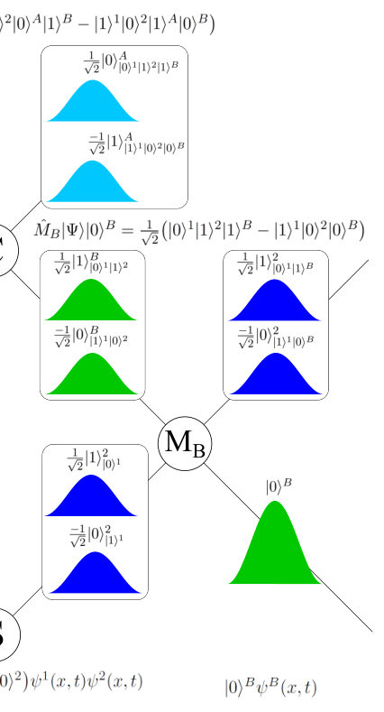
<figcaption class="paper-figure-caption"><b>Fig 1.</b> Figure 1: Spacetime diagram of a Bell experiment for a run where Alice and Bob measure the same direction. Each system is represented by a conserved fluid which moves on a straight trajectory through the experiment. These wave packets do not become entangled with the qubits they carry during this experiment. At the beginning of the experiment, the descriptors of Alice, Bob, and the qubits in the singlet state are qA = (XA, ZA), qB = (XB, ZB), q1 = (−Z1X2, −X1I2), q2 = (I1X2, −X1Z2), respectively, where Xn, Y n and Zn are the Pauli matrices, and In the identity for qubit n. It is easy to see that these give the local wavefunctions shown. When Alice measures qubit 1 using ˆ MA = CNOT1→A,...</figcaption>
</figure>
<figure class="paper-figure-card">
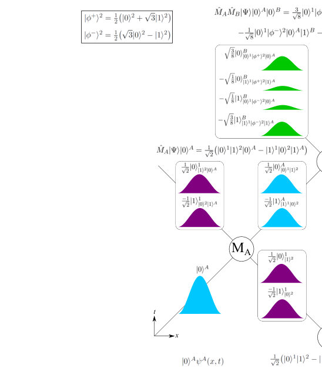
<figcaption class="paper-figure-caption"><b>Fig 2.</b> Figure 2: Spacetime diagram of a Bell experiment for a run where Alice and Bob measure directions 120◦</figcaption>
</figure>
</div>

<p><strong>Summary.</strong> This paper proposes a 'Local Many Worlds' formalism where quantum evolution is strictly local in spacetime, avoiding non-separable universal wavefunctions. It introduces Deutsch-Hayden (DH) descriptors as a compact mathematical tool to represent the history of local interactions. This hybrid picture aims to provide a fully Lorentz-covariant quantum theory suitable for quantum gravity research.</p>
<p><strong>Why it may be interesting.</strong> It offers a novel, manifestly local, and Lorentz-covariant framework for quantum mechanics that attempts to resolve foundational conflicts between quantum theory and spacetime structure.</p>
<details>
<summary>Detailed structure</summary>
<p><strong>Main problem.</strong> To develop a local, Lorentz covariant quantum theory of spacetime that avoids the issues of non-separable universal wavefunctions found in standard interpretations like Everett's.</p>
<p><strong>Main result.</strong> The authors propose a hybrid Schrödinger-Heisenberg picture using Deutsch-Hayden (DH) descriptors, which allows for a compact, local description of quantum evolution consistent with Lorentz covariance.</p>
<p><strong>Method.</strong> The paper compares the cumbersome Local Schrödinger (LS) picture, which tracks all local unitaries in the past light cone, against the DH descriptor formalism, which encodes the necessary history in a compact form.</p>
<p><strong>Model / system.</strong> The model is 'Local Many Worlds in Spacetime,' treating quantum evolution as a sequence of local unitary operations acting on local wavefunctions at each spacetime event.</p>
<p><strong>Key observables.</strong> Local wavefunctions, Deutsch-Hayden (DH) descriptors, and entanglement correlations (tested via Bell experiments).</p>
<p><strong>Important parameters / regimes.</strong> Lorentz covariance, local unitary operators ($U_j$), and the structure of the past light cone.</p>
<p><strong>Assumptions / limitations.</strong> The theory assumes no superdeterminism or retrocausality, and the DH descriptors are assumed to contain all necessary local information.</p>
<p><strong>Figures summary.</strong> Figures illustrate the descriptor updates for Bell tests under different measurement settings, showing how local wavefunctions are constructed sequentially in spacetime.</p>
<p><strong>Paper structure.</strong> The paper first introduces the LS picture's difficulties, then introduces DH descriptors as a compact alternative, and finally demonstrates that the descriptors can reconstruct the local wavefunctions, achieving a hybrid picture.</p>
</details>
<details>
<summary>Abstract</summary>
<p>Bell's theorem establishes that a local and spatially separable physical theory with no superdeterminism or retrocausality must be a theory of many local worlds. The local many worlds formalism of quantum mechanics is a transparent separable physical theory in spacetime with a Lorentz covariant causal structure. Unlike the Everett many worlds interpretation, there is no nonseparable universal wavefunction in configuration space, but like Everett, there is only local unitary evolution which conserves probability (fluid) current, and no wavefunction collapse. Each event in spacetime has its own local wavefunction which is built up using only the local wavefunctions and local unitary evolution operators within its past light cone, and which is entirely disconnected from spacelike separated local wavefunctions. We call this the local Schrödinger picture. Local many worlds can also be described in the Heisenberg picture by ascribing Deutsch-Hayden (DH) descriptors to each individual system, each of which evolves under local unitary operations. Both the local wavefunctions and DH descriptors contain records of past interactions, and while the local wavefunctions provide a clear and intuitive physical narrative, the descriptors contain all of the same information in a much more compact form. Unfortunately, the compact form is also somewhat cryptic, which has made the local Heisenberg picture relatively inaccessible. The purpose of this article is to show that the local wavefunctions for any $N$-qubit system can always be constructed directly from the DH descriptors, allowing us to combine the benefits of both pictures.</p>
</details>
<p><sub><a href="#top">↑ back to top</a></sub></p>

<p><a id="paper-2609.33714"></a></p>
<h3 id="placement-driven-reversal-of-preferred-spin-alignment-in-monolayer-hbn-vacancy-pairs"><a href="http://arxiv.org/abs/2609.33714v1">Placement-driven reversal of preferred spin alignment in monolayer hBN vacancy pairs</a></h3>
<p><strong>Authors:</strong> Daniel Hashemi<br>
<strong>Type:</strong> theory · <strong>Category:</strong> other · <strong>PDF:</strong> <a href="https://arxiv.org/pdf/2609.33714v1">https://arxiv.org/pdf/2609.33714v1</a><br>
<strong>Analysis basis:</strong> full PDF text, analyzed in chunks
<strong>Topic relevance:</strong> <code>analog quantum simulation</code> <strong>2/5</strong></p>
<div class="figure-strip-hint">↔ Scroll figures horizontally</div>
<div class="paper-figures-scroll">
<figure class="paper-figure-card">
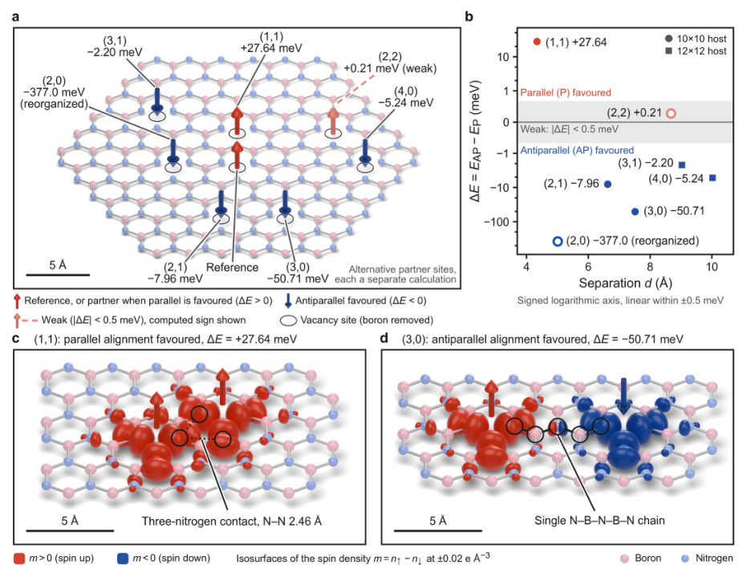
<figcaption class="paper-figure-caption"><b>Fig 1.</b> Figure 1 | Atomic placement selects the preferred collinear alignment. a, Alternative partner sites relative to one reference vacancy. Each arrow represents a separate two-vacancy calculation at 𝑛𝐚! + 𝑚𝐚&quot;, not a many-vacancy configuration. Red upward arrows denote a lower parallel (P) branch; blue downward arrows denote a lower antiparallel (AP) branch. Pale red and a dashed connector identify the weak (2,2) result, |𝛥𝐸| &lt; 0.5 meV. The (1,1) and (2,1) placements differ by one lattice vector despite being drawn at symmetry-equivalent positions. b, 𝛥𝐸= 𝐸#$ − 𝐸$ versus ideal vacancy separation, calculated with PBE at 𝑞= −2 and P-relaxed nuclei. Circles represent 10×10 supercells with the audit...</figcaption>
</figure>
<figure class="paper-figure-card">
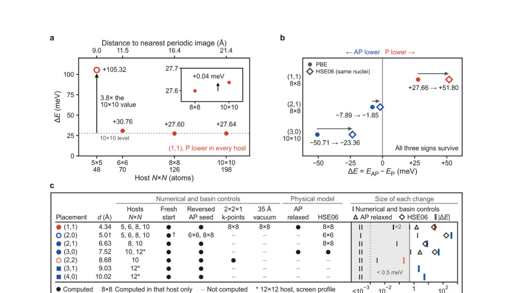
<figcaption class="paper-figure-caption"><b>Fig 2.</b> Figure 2 | Numerical reproducibility and functional dependence of the alignment map. a, PBE splitting of (1,1) versus supercell size, with the nearest periodic-image distance on the upper axis. The 5×5 value is 3.8 times the 10×10 result, whereas the final size increment changes 𝛥𝐸 by 0.04 meV. The open marker flags an additional unconstrained AP solution in the smallest cell. The 8×8 value uses the lowest of nine AP starts, which span 0.062 meV. b, Matched- geometry PBE and HSE06 comparisons. All three displayed signs persist, although HSE06 shifts each value towards P and reverses the magnitude ranking of the reference pairs. Each functional comparison uses the same supercell; the two...</figcaption>
</figure>
<figure class="paper-figure-card">
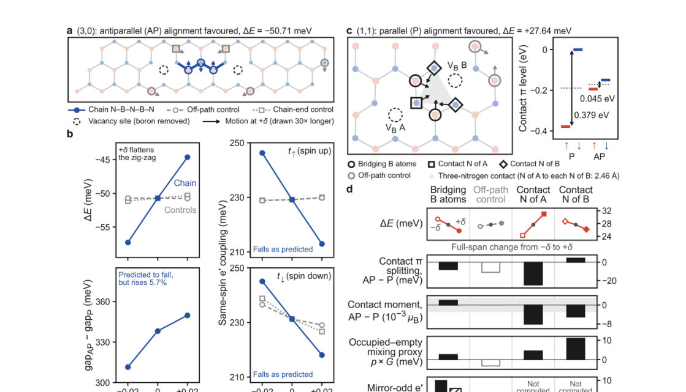
<figcaption class="paper-figure-caption"><b>Fig 3.</b> Figure 3 | Local distortions distinguish chain and contact responses. a, Displacement modes for (3,0). The chain mode moves the three interior atoms and flattens the zig-zag; the off-path and chain-end modes are controls. The chain-end atoms lie on six-bond paths and are not strictly off-path. Arrows show the +0.02 Å displacement, enlarged 30-fold. b, Energy splitting, P-branch same-spin couplings 𝑡↑ and 𝑡↓, and the chain-mode gap contrast gap#$ −gap$. Chain flattening weakens the AP preference and reduces both couplings. Each control changes the splitting by less than 1 meV over the full displacement span. The gap contrast increases, contrary to its stated prediction. c, Contact modes for...</figcaption>
</figure>
<figure class="paper-figure-card">
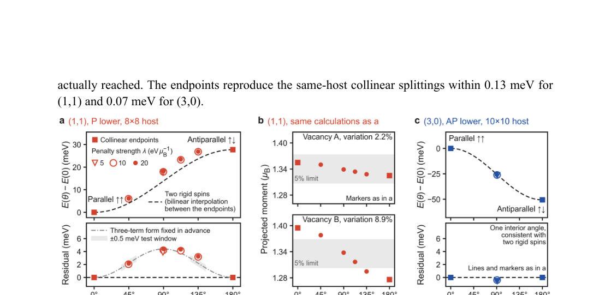
<figcaption class="paper-figure-caption"><b>Fig 4.</b> Figure 4 | The closest pair departs from a bilinear angular-energy curve under atom-wise constraints. a, Penalty-removed noncollinear PBE energies of (1,1) in 8×8, plotted against the achieved angle between vacancy moments. The dashed curve, 1 2 ⁄ 𝛥𝐸(1 −cos𝜃), joins the endpoints without fitting, using their noncollinear splitting of 27.725 meV. At 𝜆= 20 eV 𝜇,</figcaption>
</figure>
</div>

<p><strong>Summary.</strong> This theoretical study uses DFT to map out how the spin alignment preference between two interacting vacancies in monolayer hBN is dictated by their precise atomic placement. The results show that small structural changes can reverse the preferred spin coupling, indicating a complex, placement-sensitive electronic interaction regime. This work establishes a key physical principle for engineering coupled spin qubits in 2D materials.</p>
<p><strong>Why it may be interesting.</strong> This work provides a microscopic, first-principles foundation for understanding coupled spin centers in atomically thin materials, which is crucial for designing next-generation quantum devices based on solid-state defects.</p>
<details>
<summary>Detailed structure</summary>
<p><strong>Main problem.</strong> The study investigates how the electronic interactions between two closely placed, negatively charged boron vacancies in monolayer hBN reverse the preferred collinear spin alignment based on their atomic-scale placement.</p>
<p><strong>Main result.</strong> The spin alignment preference is highly placement-sensitive, with the sign of the energy splitting reversing when the vacancies are shifted by a single lattice vector, demonstrating a departure from simple bilinear Heisenberg models.</p>
<p><strong>Method.</strong> Density-Functional Theory (DFT) calculations are used to compute the energy difference ($\Delta E$) between parallel and antiparallel spin alignments for various vacancy configurations.</p>
<p><strong>Model / system.</strong> The system is a monolayer of hexagonal boron nitride (hBN) containing two negatively charged boron vacancies ($ ext{V}^-$). Calculations are performed using DFT at a total charge $q=-2$ across seven different atomic placements.</p>
<p><strong>Key observables.</strong> Energy splitting ($\Delta E$) between parallel (P) and antiparallel (AP) states, spin-density contrast, and the dependence of $\Delta E$ on vacancy separation and relative placement.</p>
<p><strong>Important parameters / regimes.</strong> The closest pair (4.3 Å) favors parallel alignment by $27.6 	ext{ meV}$, while a 7.5 Å pair favors antiparallel alignment by $50.7 	ext{ meV}$. The splitting is significantly larger than the isolated-center zero-field splitting.</p>
<p><strong>Assumptions / limitations.</strong> The analysis relies on collinear Kohn–Sham solutions, which are not guaranteed to represent true quantum multiplets, and the comparison is sensitive to the choice of DFT functional (PBE vs. HSE06).</p>
<p><strong>Figures summary.</strong> Figures illustrate atomic placement effects, $\Delta E$ vs. separation, and spin-density isosurfaces for specific vacancy configurations, while tables summarize the calculated energy splittings for multiple placements.</p>
<p><strong>Paper structure.</strong> The paper systematically analyzes the placement dependence of spin alignment using DFT, comparing results across different separations and structural motifs (e.g., chain vs. contact modes) to establish a placement-sensitive regime for interacting defects.</p>
</details>
<details>
<summary>Abstract</summary>
<p>The negatively charged boron vacancy is an optically addressable spin centre in hexagonal boron nitride (hBN), but bringing two vacancies together introduces electronic interactions absent from the isolated-defect picture. Here we use density-functional theory at total charge q = -2 to show that atomic-scale placement reverses the preferred collinear spin alignment in monolayer hBN. Among seven configurations, the closest pair, separated by 4.3 angstrom, favours parallel alignment by 27.6 meV within the semilocal approximation. Moving one vacancy by a single lattice vector reverses the preference, and a 7.5 angstrom pair favours antiparallel alignment by 50.7 meV. Numerical controls change these two reference splittings by less than 1 meV; hybrid-functional calculations retain their signs while substantially changing their magnitudes. Local distortions connect the antiparallel preference at 7.5 angstrom to changes in vacancy-state hybridization along an intervening atomic chain. The closest pair instead exhibits a contact-localized spin-density contrast and constrained angular energies that depart from the bilinear Heisenberg form. These results identify a placement-sensitive regime of interacting defects and provide a microscopic foundation for investigating coupled spin centres in atomically thin materials.</p>
</details>
<p><sub><a href="#top">↑ back to top</a></sub></p>

<p><a id="paper-2609.33777"></a></p>
<h3 id="scaling-theory-for-learning-low-energy-quantum-subspaces"><a href="http://arxiv.org/abs/2609.33777v1">Scaling Theory for Learning Low-Energy Quantum Subspaces</a></h3>
<p><strong>Authors:</strong> Guijing Duan, Chen Mo, Di Luo<br>
<strong>Type:</strong> theory · <strong>Category:</strong> strongly correlated electrons · <strong>PDF:</strong> <a href="https://arxiv.org/pdf/2609.33777v1">https://arxiv.org/pdf/2609.33777v1</a><br>
<strong>Analysis basis:</strong> full PDF text, analyzed in chunks
<strong>Topic relevance:</strong> <code>analog quantum simulation</code> <strong>2/5</strong></p>
<div class="figure-strip-hint">↔ Scroll figures horizontally</div>
<div class="paper-figures-scroll">
<figure class="paper-figure-card">
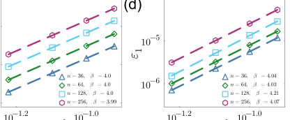
<figcaption class="paper-figure-caption"><b>Fig 1.</b> FIG. 1. Geometry of the wavefunction basis construction and its distance scaling. (a) Sample Hxj-subspaces at sam- pling distance d around the target x0, which is itself not sam- pled. (b) The sampled Hxj-subspaces span BM,K(d), which approximates the target Hx0-subspace to O(dq+1). (c), (d) Energy-density errors εa ≡[ eEa(d) −Ea(x0)]/n versus the sampling distance d at order q = 1, for the ground state (a = 0) and the first excited singlet (a = 1) of the dimerized Heisenberg chain, with the construction applied in the two- dimensional low-energy subspace (M = 2) at several system sizes n. Dashed lines are power-law fits, with exponents close to the predicted value 2(q + 1) = 4.</figcaption>
</figure>
<figure class="paper-figure-card">
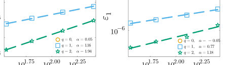
<figcaption class="paper-figure-caption"><b>Fig 2.</b> FIG. 2. Finite-size scaling of the energy density errors. (a) Ground state error from B1,K(d), testing the predicted nq</figcaption>
</figure>
<figure class="paper-figure-card">
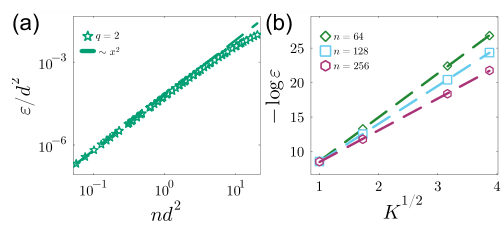
<figcaption class="paper-figure-caption"><b>Fig 3.</b> FIG. 3. Single variable data collapse and sample complexity. (a) Rescaled ground-state error ε0/d2 versus nd2 for q = 2, combining different n and d; the dashed line is the power law (nd2)q. (b) −log ε0 versus √</figcaption>
</figure>
<figure class="paper-figure-card">
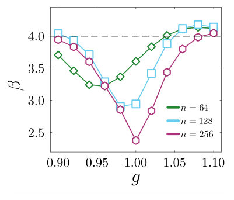
<figcaption class="paper-figure-caption"><b>Fig 4.</b> FIG. 4. Critical crossover of the effective distance scaling exponent. The fitted exponent β in ε ∼dβ is shown as a function of the transverse field g for the open transverse field Ising chain. The dashed line marks the gapped prediction β = 2(q + 1) = 4 for q = 1. As the system size increases, β develops a deeper and sharper dip near gc = 1, signaling the crossover out of the gapped scaling regime.</figcaption>
</figure>
<figure class="paper-figure-card">
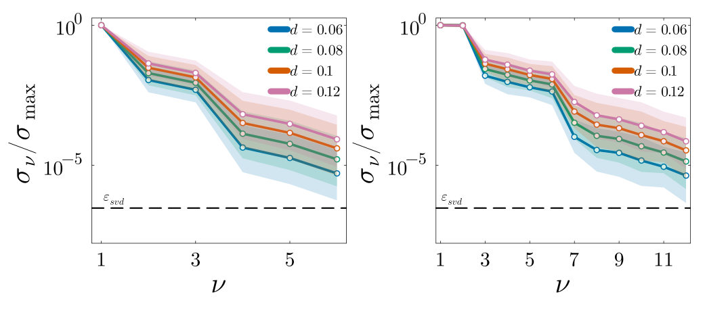
<figcaption class="paper-figure-caption"><b>Fig 5.</b> FIG. 5. Singular-value spectra of the projected overlap matrix at fixed Taylor degree q = 1. (a) Ground-state sampling basis. (b) Low-energy singlet sampling basis. For each sampling distance d, the solid line shows the median over the benchmark system sizes, and the shaded region indicates the full range over n = 36, 64, 128, 256. The dashed horizontal line marks the cutoff ϵsvd used in the overlap-matrix truncation.</figcaption>
</figure>
</div>

<p><strong>Summary.</strong> This work introduces a scaling theory to predict the accuracy of approximating a low-energy quantum subspace by sampling nearby Hamiltonians. It proves that the error scales predictably with the sampling distance and system size, providing a quantitative measure of learnability. This has significant implications for designing efficient numerical methods for studying quantum phase diagrams.</p>
<p><strong>Why it may be interesting.</strong> The quantitative scaling laws derived provide a rigorous, data-driven framework for understanding how much information about a complex quantum ground state can be extracted from limited sampling, which is crucial for developing efficient quantum simulation protocols.</p>
<details>
<summary>Detailed structure</summary>
<p><strong>Main problem.</strong> The paper develops a scaling theory to efficiently learn the low-energy quantum subspace of a Hamiltonian family when solving for many parameters is too costly.</p>
<p><strong>Main result.</strong> It establishes that the energy-density error scales with the sampling distance $d$ according to a power law, $\epsilon \propto d^{2(q+1)}$, and identifies the scaling variable $nd^2$ for local gapped systems.</p>
<p><strong>Method.</strong> The approach involves constructing a variational subspace spanned by wavefunctions sampled at nearby parameter points and analyzing the resulting energy error bounds based on canceling response orders.</p>
<p><strong>Model / system.</strong> The theory is tested on the spin-1/2 Transverse-Field Ising Chain, which serves as a model for studying quantum phase transitions and low-energy spectral flow.</p>
<p><strong>Key observables.</strong> Energy-density error ($\epsilon_a$), effective distance exponent ($eta$), and the scaling variable $nd^2$.</p>
<p><strong>Important parameters / regimes.</strong> Sampling distance ($d$), number of sampled points ($K$), cancellation order ($q$), and system size ($n$).</p>
<p><strong>Assumptions / limitations.</strong> The analysis assumes the existence of an external gap ($\Delta_{	ext{high}} > 0$) around the low-energy subspace, although it analyzes behavior near gap closing.</p>
<p><strong>Figures summary.</strong> Figures illustrate the energy-density error scaling confirming the predicted power-law exponents, show data collapse onto the $nd^2$ scaling curve, and track the effective exponent $eta$ near critical points.</p>
<p><strong>Paper structure.</strong> The paper moves from establishing the general error bound based on response order cancellation to deriving the specific scaling law for gapped local systems, and finally validates this theory using numerical simulations on the Ising chain, including analysis near criticality.</p>
</details>
<details>
<summary>Abstract</summary>
<p>Phase diagrams and energy surfaces require low-energy states across a family of Hamiltonians, but solving each parameter point independently is prohibitively expensive. An important question is not how a single labeled eigenstate behaves under parameter variation, but how much information about the low-energy sector is contained in a small set of reference wavefunctions. We show that the physically relevant object is the isolated low-energy subspace itself: it remains well defined through degeneracies and level crossings, and it can be learned efficiently from nearby sampled states. Working in this subspace, we prove that a sampling pattern cancelling the first $q$ nonconstant response orders yields an energy-density error bounded by $d^{2(q+1)}$ for every retained level, where $d$ is the parameter-space sampling distance. For a gapped local ground state on $n$ sites, locality sharpens this to $d^2(nd^2)^q$, identifying $nd^2$ as the natural scaling variable governing the effectiveness of higher-order information from sampled wavefunctions. In a local analytic regime this gives a sampling cost $K=\mathcal{O}([\log(1/\varepsilon)]^D)$ at fixed parameter dimension $D$. Numerical results on Heisenberg and transverse-field Ising chains confirm the distance scaling law and the $nd^2$ collapse. Beyond characterizing learnability, the scaling behavior further provides a finite-size probe of phase transitions near criticality.</p>
</details>
<p><sub><a href="#top">↑ back to top</a></sub></p>

<p><a id="paper-2609.35687"></a></p>
<h3 id="speed-fisher-information-chaos-and-irreversibility-in-classical-and-quantum-dynamics"><a href="http://arxiv.org/abs/2609.35687v1">Speed-Fisher Information: Chaos and Irreversibility in Classical and Quantum Dynamics</a></h3>
<p><strong>Authors:</strong> Nachiket Karve, Nathan Rose, David Campbell, Anatoli Polkovnikov<br>
<strong>Type:</strong> theory · <strong>Category:</strong> statistical mechanics · <strong>PDF:</strong> <a href="https://arxiv.org/pdf/2609.35687v1">https://arxiv.org/pdf/2609.35687v1</a><br>
<strong>Analysis basis:</strong> full PDF text, analyzed in chunks
<strong>Topic relevance:</strong> <code>non-equilibrium universality</code> <strong>2/5</strong></p>
<div class="figure-strip-hint">↔ Scroll figures horizontally</div>
<div class="paper-figures-scroll">
<figure class="paper-figure-card">
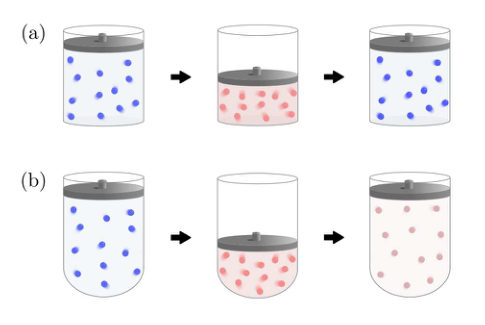
<figcaption class="paper-figure-caption"><b>Fig 1.</b> FIG. 1: Slow, cyclic driving of (a) a regular system, whose final state closely approaches its initial state, and (b) a chaotic system, where thermodynamic friction produces dissipated work at finite driving speeds.</figcaption>
</figure>
<figure class="paper-figure-card">
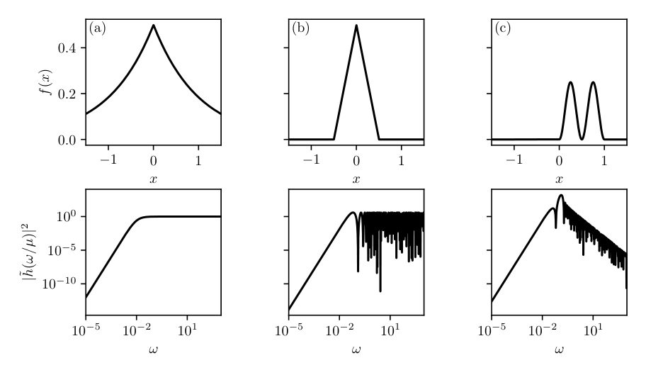
<figcaption class="paper-figure-caption"><b>Fig 2.</b> FIG. 2: The perturbation profile (top) and the corresponding acceleration filter (bottom) for three different protocols: (a) exponentially modulated, (b) triangular, and (c) sinusoidal. Parameters used – µ = 10−2. The high-frequency noisy profile is an artifact of the logarithmic scale.</figcaption>
</figure>
<figure class="paper-figure-card">
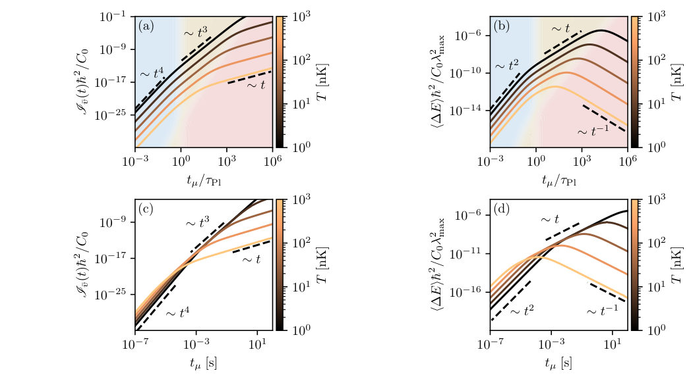
<figcaption class="paper-figure-caption"><b>Fig 3.</b> FIG. 3: (a) The speed-Fisher information as a function of protocol time tµ, in units of the Planckian time, for a cold Fermi gas with a Fermi temperature of 1 µK and kF |a| = 0.1. The relaxation time is given by τrel = 9ℏTF 16πkB(kF a)2 1 T 2 in the weak coupling limit of this system [61]. We observe a transition from ∼t4 µ to ∼t3 µ and, finally, to ∼tµ as the protocol time increases. The blue, yellow, and red regions correspond to fast, intermediate, and slow driving, respectively. (b) The corresponding scaling of the dissipated energy for a protocol with fixed amplitude λmax. (c &amp; d) The same plots of speed-Fisher information and dissipated energy as a function of the unscaled time.</figcaption>
</figure>
<figure class="paper-figure-card">
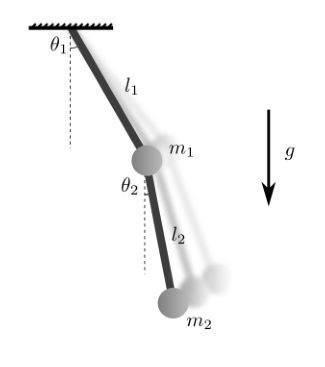
<figcaption class="paper-figure-caption"><b>Fig 4.</b> FIG. 4: Sketch of a double pendulum.</figcaption>
</figure>
<figure class="paper-figure-card">
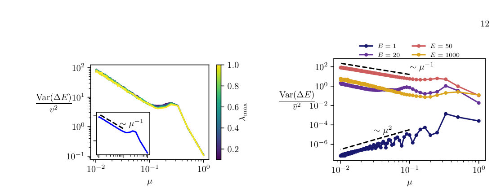
<figcaption class="paper-figure-caption"><b>Fig 5.</b> FIG. 5: (a) Var(∆E)/¯v2 as a function of µ at several fixed protocol amplitudes λmax for the double pendulum system with energy E = 50. The response is approximately independent of λmax. Inset: Var(∆E)/¯v2 averaged over all λmaxs. (b) Var(∆E)/¯v2 at different energies of the double pendulum. The E = 20 and E = 1000 curves scale as ∼µ−1.5 and ∼µ−1.7 respectively. Parameters used: m1 = 1, m2 = 1, l1 = 1, l2 = 1, g = 9.81, energy shell width σ = 0.</figcaption>
</figure>
</div>

<p><strong>Summary.</strong> This paper introduces the 'speed-Fisher information' as a unified diagnostic tool to quantify chaos in both classical and quantum systems subjected to slow driving. It shows that chaotic behavior leads to a divergence in this information, while also predicting a unique quantum scaling regime at very short timescales. This provides a powerful, information-geometric approach to studying the transition between order and chaos.</p>
<p><strong>Why it may be interesting.</strong> This work provides a quantitative, information-theoretic measure (speed-Fisher information) to distinguish between regular and chaotic dynamics in both quantum and classical settings, linking chaos directly to thermodynamic irreversibility.</p>
<details>
<summary>Detailed structure</summary>
<p><strong>Main problem.</strong> The paper aims to establish a unified framework to study classical and quantum chaos by analyzing how a system's stationary states respond to slow, time-dependent driving.</p>
<p><strong>Main result.</strong> Chaotic dynamics are characterized by a divergence in the 'speed-Fisher information' with protocol time, which is controlled by the perturbation's low-frequency spectral weight. A unique quantum scaling regime is also identified at very short timescales.</p>
<p><strong>Method.</strong> The core diagnostic is the 'speed-Fisher information,' which measures the susceptibility of the final state to the average driving speed ($ar{v}$). This is analyzed using first-order perturbation theory applied to the fidelity of the state.</p>
<p><strong>Model / system.</strong> The framework applies to general classical and quantum Hamiltonian systems, extending to non-Hamiltonian classical flows. The analysis involves subjecting the system to slow, cyclic driving protocols parameterized by the inverse duration $\mu=1/t$.</p>
<p><strong>Key observables.</strong> Speed-Fisher information ($I_{ar{v}}$), Fidelity ($F$), and the low-frequency spectral weight of the system's correlation functions.</p>
<p><strong>Important parameters / regimes.</strong> Protocol time ($t$), inverse duration ($\mu=1/t$), average speed ($ar{v}$), and the Planckian timescale ($\hbar/k_B T$).</p>
<p><strong>Assumptions / limitations.</strong> The analysis relies on first-order perturbation theory, which is valid under the condition that the maximum perturbation strength ($\lambda_{\max}$) is small compared to unity.</p>
<p><strong>Figures summary.</strong> Figure 1 illustrates slow, cyclic driving, contrasting regular systems (where the final state approaches the initial state) with chaotic systems (where thermodynamic friction causes dissipated work).</p>
<p><strong>Paper structure.</strong> The paper introduces the speed-Fisher information as the diagnostic tool, derives its dependence on the driving speed and time scale, establishes the distinct scaling laws for regular versus chaotic dynamics, and finally examines the crossover between the unique quantum scaling and the classical scaling.</p>
</details>
<details>
<summary>Abstract</summary>
<p>We propose a unified perspective on classical and quantum chaos based on the sensitivity of a system's stationary states to slow driving. We probe this sensitivity via the system's susceptibility to the average protocol speed, which we call the ``speed-Fisher information," and relate it to irreversible entropy production in the system. We show that chaotic dynamics manifests as a divergence of the speed-Fisher information with the protocol time, and that this response is controlled by the perturbation's low-frequency spectral weight. This approach to chaos applies to both classical and quantum Hamiltonian systems, and naturally extends to non-Hamiltonian classical flows. Additionally, we identify a quantum regime at times shorter than the Planckian timescale, in which the speed-Fisher information exhibits a uniquely quantum scaling. We illustrate this framework with simple classical and quantum examples</p>
</details>
<p><sub><a href="#top">↑ back to top</a></sub></p>

<p><a id="paper-2609.32768"></a></p>
<h3 id="trimers-pairs-and-localisation-on-disordered-random-graphs"><a href="http://arxiv.org/abs/2609.32768v1">Trimers, pairs and localisation on disordered random graphs</a></h3>
<p><strong>Authors:</strong> Alexei Vazquez<br>
<strong>Type:</strong> theory · <strong>Category:</strong> disordered systems and neural networks · <strong>PDF:</strong> <a href="https://arxiv.org/pdf/2609.32768v1">https://arxiv.org/pdf/2609.32768v1</a><br>
<strong>Analysis basis:</strong> full PDF text, analyzed in chunks
<strong>Topic relevance:</strong> <code>analog quantum simulation</code> <strong>2/5</strong></p>
<div class="figure-strip-hint">↔ Scroll figures horizontally</div>
<div class="paper-figures-scroll">
<figure class="paper-figure-card">
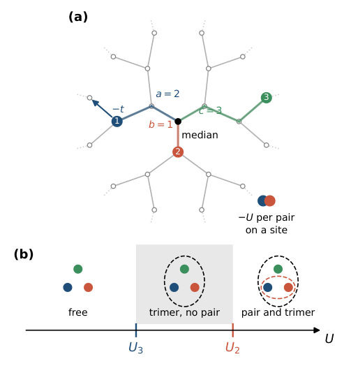
<figcaption class="paper-figure-caption"><b>Fig 1.</b> FIG. 1. The problem. (a) Three distinguishable particles on the Bethe lattice of degree 3 (K = 2), hopping with amplitude −t and attracting with −U per pair on a site. The median vertex is the unique vertex on the three geodesics, and the distances (a, b, c) from it are the coordinates of the uniform sector, Sec. IV. (b) The question is the order of the two thresh- olds: the attraction U3 at which three particles first bind and U2 at which two do. Between them (shaded) the trimer ex- ists and no pair does, the Borromean window; on a tree each threshold is asked in two sectors, Sec. III.</figcaption>
</figure>
<figure class="paper-figure-card">
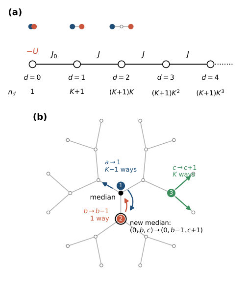
<figcaption class="paper-figure-caption"><b>Fig 2.</b> FIG. 2. The uniform-sector calculation. (a) The pair problem reduced to the half line of the distance d: site energy −U at d = 0, hopping J0 = 2 √</figcaption>
</figure>
<figure class="paper-figure-card">
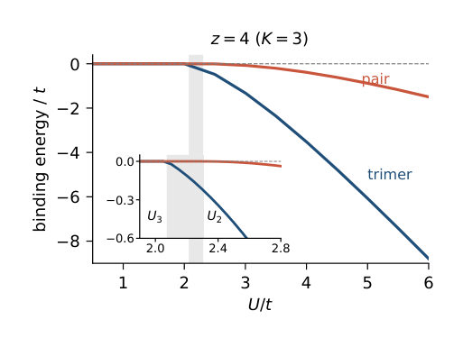
<figcaption class="paper-figure-caption"><b>Fig 3.</b> FIG. 3. Binding energies in the uniform sector of the Bethe lattice of degree z = 4 (K = 3). Trimer energy measured from the three-particle continuum edge, E3 + 6 √</figcaption>
</figure>
<figure class="paper-figure-card">
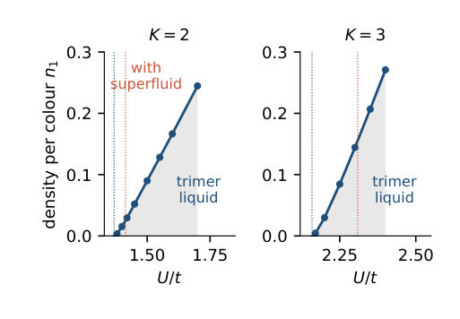
<figcaption class="paper-figure-caption"><b>Fig 4.</b> FIG. 4. Density n1 per colour at which the colour superfluid enters, against the attraction U, for K = 2 and 3. Below the line (shaded) a Fermi liquid of trimers is the ground state; above it the colour superfluid is a minority component, below 5% of the particles up to n = 0.3. The line starts at U3 and crosses n = 0.05, the limit of the composite description, at U = 1.45 t (K = 2) and 2.22 t (K = 3); at n = 0.1 trimers of radius 2 overlap. Dotted lines mark U3, U u 2 and U2 from Table I.</figcaption>
</figure>
<figure class="paper-figure-card">
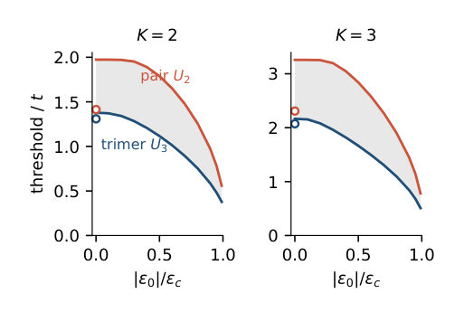
<figcaption class="paper-figure-caption"><b>Fig 5.</b> FIG. 5. Pair threshold U2 (light line) and trimer threshold U3 (dark line) at a single site of energy ϵ0 on the Bethe lattice, for K = 2 and K = 3, against the depth of the site in units of ϵc = (K −1)t/ √</figcaption>
</figure>
</div>

<p><strong>Summary.</strong> This theoretical work examines the stability of emergent multi-particle bound states (hyperedges) formed by pairwise interactions on disordered random graphs. It finds that these higher-order structures are surprisingly fragile, localizing at much weaker disorder strengths than their individual components. This highlights that the emergence of complex quantum correlations is highly sensitive to network disorder.</p>
<p><strong>Why it may be interesting.</strong> The study provides quantitative predictions for how higher-order correlations (like three-body interactions) behave under disorder, which is crucial for understanding complex quantum materials where interactions are not purely pairwise.</p>
<details>
<summary>Detailed structure</summary>
<p><strong>Main problem.</strong> The paper investigates whether a higher-order group interaction (like a trimer) can emerge from simple pairwise dynamics on a graph and whether this emergent structure remains stable against disorder (Anderson localization).</p>
<p><strong>Main result.</strong> Emergent hyperedges localize at a disorder strength significantly lower than that required for their constituent single-particle or pair components to localize, indicating the composite structure is more fragile to heterogeneity.</p>
<p><strong>Method.</strong> The analysis uses the Bethe lattice and cavity method to calculate binding thresholds and localization transitions for $k$-body states, comparing results across different graph structures and disorder strengths.</p>
<p><strong>Model / system.</strong> The model involves $k$ distinguishable fermions hopping on a graph (Bethe lattice, random graphs) with on-site attractions ($U$) and hopping ($t$), subjected to site disorder ($\epsilon_i$).</p>
<p><strong>Key observables.</strong> Localization thresholds ($\Delta$ or $W_c$) for single particles, pairs, and trimers; the existence and stability of the 'Borromean' hyperedge.</p>
<p><strong>Important parameters / regimes.</strong> Hopping amplitude ($t$), attraction strength ($U$), disorder strength ($\Delta$ or $W$), and the number of particles ($k=1, 2, 3$).</p>
<p><strong>Assumptions / limitations.</strong> The analysis often relies on extrapolating results from finite truncations (Bethe lattice) to the thermodynamic limit, and sometimes treats the composite structure as rigid.</p>
<p><strong>Figures summary.</strong> Figures illustrate the comparison of critical disorder thresholds ($W_c$) for trimers versus pairs/single particles, and phase diagrams showing the transition between liquid, glass, and localized regimes.</p>
<p><strong>Paper structure.</strong> The paper progresses from defining the general problem of emergent $k$-body states to calculating binding thresholds on the Bethe lattice, and finally analyzing the localization transition on disordered random graphs by comparing the critical disorder for different composite orders.</p>
</details>
<details>
<summary>Abstract</summary>
<p>Higher-order networks take group interactions as given. I ask what happens when a group interaction is made by pairwise dynamics on a graph, and follow it through the transition that decides whether it matters at large scale, Anderson localisation. An emergent hyperedge is a $k$-body bound state of a Hamiltonian whose terms live on the vertices and edges of the graph, Borromean when none of its $(k-1)$-body faces is bound, detected on a finite graph by a $k$-fold coincidence that survives the thermodynamic limit while the $(k-1)$-fold ones vanish. Sparse random graphs produce one from the simplest pairwise dynamics: three distinguishable particles with on-site attraction $U$ and hopping $t$ bind into a trimer before any pair binds. The thresholds are obtained on the Bethe lattice, in closed form for the pair, in both sectors that an expander graph has and a lattice lacks, the one a condensate sees and the one a Fermi liquid sees. On a disordered graph the emergent hyperedges nucleate on rare deep sites and localise before their parts: the compact trimer, with a narrow band and a threefold sensitivity to site energies, undergoes the Anderson transition at a disorder of $1.6t$, against $17t$ for a single particle and $4t$ for a pair, and the Fermi liquid of trimers is a glass above a line between $1.5t$ and $1.7t$, where a liquid of single particles at the same density needs $15t$ to $16t$. The transition is the single-particle cavity transition with the composite's hopping and effective disorder. A group interaction made by pairwise dynamics is an order of magnitude more fragile to heterogeneity than the network that makes it.</p>
</details>
<p><sub><a href="#top">↑ back to top</a></sub></p>

<p><a id="paper-2609.31839"></a></p>
<h3 id="zoology-of-chiral-superconductors-in-chern-bands"><a href="http://arxiv.org/abs/2609.31839v1">Zoology of chiral superconductors in Chern bands</a></h3>
<p><strong>Authors:</strong> André Grossi Fonseca, Aidan Reddy, Ahmed Abouelkomsan, Liang Fu, Marin Soljačić<br>
<strong>Type:</strong> theory · <strong>Category:</strong> strongly correlated electrons · <strong>PDF:</strong> <a href="https://arxiv.org/pdf/2609.31839v1">https://arxiv.org/pdf/2609.31839v1</a><br>
<strong>Analysis basis:</strong> full PDF text, analyzed in chunks
<strong>Topic relevance:</strong> <code>analog quantum simulation</code> <strong>2/5</strong></p>
<div class="figure-strip-hint">↔ Scroll figures horizontally</div>
<div class="paper-figures-scroll">
<figure class="paper-figure-card">
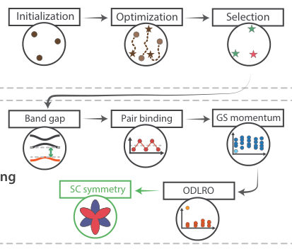
<figcaption class="paper-figure-caption"><b>Fig 1.</b> Figure 1. Target-phase loss function for superconductivity and workflow. (a) Visual depiction of loss function definition in Eq. (2), in terms of the sign oscillation of the pair binding energy, defined in Eq. (1). (b) Schematic workflow for searching for and verifying superconductivity, through optimization of the superconductor loss function and a multi-step screening process (see text), respectively.</figcaption>
</figure>
<figure class="paper-figure-card">
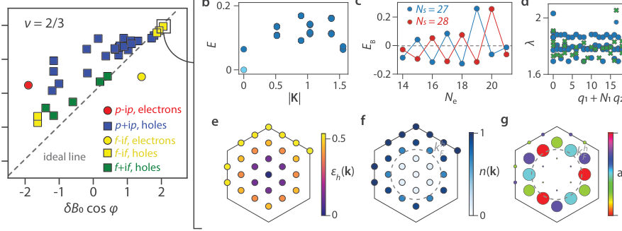
<figcaption class="paper-figure-caption"><b>Fig 2.</b> Figure 2. Chiral superconductors at ν = 2/3 found through target-phase optimization and screening steps. (a) 2D projection of parameter points found, with marker types denoting the charge carriers (circles/squares for electrons/holes) and color denoting the phase winding of the condensate wavefunction. Dashed line marks the ideal line V0 = δB0/2. Data in the panels are for parameter point highlighted, located at (δB0, V0, ϕ, U0, d) = (2.06, 0.99, 0.07, 2.65, 1.37). All many-body data are calculated at system size Ns = 27 and number of electrons Ne = 18, unless otherwise specified. (b) Many-body spectrum as a function of the absolute value of the center-of-mass momentum |K|. (c) Pair binding...</figcaption>
</figure>
<figure class="paper-figure-card">
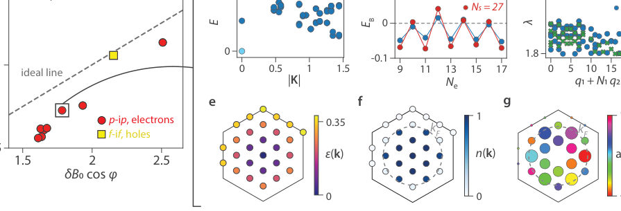
<figcaption class="paper-figure-caption"><b>Fig 3.</b> Figure 3. Chiral superconductors at ν = 1/2 found through target-phase optimization and screening steps. (a) 2D projection of parameter points found, with marker types denoting the charge carriers (circles/squares for electrons/holes) and color denoting the phase winding of the condensate wavefunction. Dashed line marks the ideal line V0 = δB0/2. Data in the panels are for the parameter point highlighted, located at (δB0, V0, ϕ, U0, d) = (−1.79, −0.73, 3.18, 1.98, 0.77). All many-body data are calculated at system size Ns = 26 and number of electrons Ne = 13, unless otherwise specified. (b) Many-body spectrum as a function of the absolute value of the center-of-mass momentum |K|. (c) Pair...</figcaption>
</figure>
<figure class="paper-figure-card">
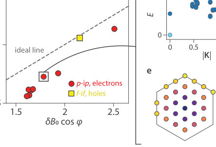
<figcaption class="paper-figure-caption"><b>Fig 4.</b> Figure 3a summarizes the superconducting phases found at ν = 1/2. In contrast to the larger variety of orders identified at ν = 2/3, our search finds two principal phases: a p −ip super- conductor of electrons and an f −if superconductor of holes. The p −ip phase seems to be favored away from the ideal line, while the f −i f superconductor appears near the ideal line, but at large LL modulations. Notably, the f −if superconductor found here seems to be the same superconductor as the one</figcaption>
</figure>
<figure class="paper-figure-card">
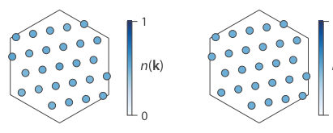
<figcaption class="paper-figure-caption"><b>Fig 5.</b> Figure 4. Quantum phase transition between a p −ip supercon- ductor (SC) and a composite Fermi liquid (CFL). All data are cal- culated at system size Ns = 26 and number of electrons Ne = 13. (a) Parameter space path taken to drive phase transition, which corresponds to sweeping the path δB0(α) = (1 −α)δB0 0 + αδBf 0, with δB0 0 = −1.79, δBf 0 = −1.60, while holding all other parameters fixed to (V0, ϕ, U0, d) = (−0.73, 3.18, 1.98, 0.77). (b) Ground-state momentum occupation range ∆n = max n(k) −min n(k) as a func- tion of sweep parameter α. (c) Many-body spectrum (top) and ground-state momentum occupation (bottom) for final point in the sweep α = 1. (d) Many-body spectrum (top) and...</figcaption>
</figure>
</div>

<p><strong>Summary.</strong> This paper develops and applies a sophisticated optimization technique to map the phase diagram of chiral superconductors in Chern bands, simulating systems relevant to moiré materials. By analyzing the pair-binding energy and employing rigorous screening, the authors uncover a rich variety of superconducting states, including novel $p\pm ip$ and $f\pm if$ phases. The work establishes a general computational strategy for exploring complex interacting quantum matter.</p>
<p><strong>Why it may be interesting.</strong> This work provides a powerful, generalizable computational framework (target-phase optimization) for mapping out complex, interacting quantum phases in topological materials, which is highly relevant for understanding emergent phenomena in condensed matter systems.</p>
<details>
<summary>Detailed structure</summary>
<p><strong>Main problem.</strong> To systematically search for and characterize chiral superconducting phases in systems of interacting electrons confined within a topological Chern band.</p>
<p><strong>Main result.</strong> The study identifies a diverse landscape of competing chiral superconducting instabilities, finding novel $p\pm ip$ and $f\pm if$ superconductors at specific fractional fillings like $
u=2/3$ and $
u=1/2$. Furthermore, it establishes a direct transition between chiral superconductors and composite Fermi liquids.</p>
<p><strong>Method.</strong> The authors adapt the target-phase optimization method, using a differentiable loss function based on the pair-binding energy, combined with gradient-based optimization and rigorous screening procedures.</p>
<p><strong>Model / system.</strong> The research uses a minimal model of interacting spinless electrons in a Chern band, motivated by moiré materials like twisted bilayer MoTe2. The system is modeled using exact diagonalization on periodically modulated Landau levels with screened Coulomb interactions.</p>
<p><strong>Key observables.</strong> Pair-binding energy, superconducting loss function ($L < 0$), Off-Diagonal Long-Range Order (ODLRO) confirmed via the two-body reduced density matrix, and quantum geometric quantities like the Fubini–Study metric and Berry curvature.</p>
<p><strong>Important parameters / regimes.</strong> Filling factors $
u=2/3$ and $
u=1/2$; modulation parameters ($\delta B_0, V_0, \phi, U_0, d$); and the comparison between ideal and non-ideal quantum geometry regimes.</p>
<p><strong>Assumptions / limitations.</strong> The method assumes the relevant single-particle dispersion has a single minimum for the even-odd effect analysis, and the final confirmation of superconductivity requires satisfying multiple criteria beyond just minimizing the loss function.</p>
<p><strong>Figures summary.</strong> Figures illustrate the target-phase loss function and the workflow for searching for superconductivity. Supplemental figures project the existence of chiral superconductors in the multi-dimensional parameter space for fillings $
u=2/3$ and $
u=1/2$, and show geometric characterizations.</p>
<p><strong>Paper structure.</strong> The paper introduces the problem by referencing recent observations in moiré systems. It details the methodology—adapting target-phase optimization and defining the loss function—before presenting results across different filling fractions, culminating in a characterization of the complex phase diagram.</p>
</details>
<details>
<summary>Abstract</summary>
<p>Evidence for chiral superconductivity has recently been observed in several van der Waals systems including rhombohedral multilayer graphene and twisted bilayer MoTe$_2$. In the latter, superconductivity emerges at carrier densities near a fractional Chern insulator. This raises the question of what kinds of superconductors may emerge in a system of electrons in a topological band with strong repulsive interactions. Here, we adapt the target-phase optimization method to search for chiral superconductors in a minimal model of interacting electrons in a Chern band. We construct a differentiable loss function for superconductors from the sign oscillation of the pair-binding energy and combine gradient-based optimization with a rigorous screening procedure to identify and characterize superconductors. Applying this framework within exact diagonalization to spinless electrons in periodically modulated Landau levels with screened Coulomb interactions, we uncover a broad family of chiral superconducting phases. At filling $ν=2/3$, we recover the previously identified $f-\mathrm{i} f$ hole superconductors and find additional $p\pm \mathrm{i} p$ and $f+\mathrm{i} f$ superconductors of both electrons and holes, occurring near and far from the limit of ideal quantum geometry. At $ν=1/2$, we identify $p- \mathrm{i} p$ electron and $f-\mathrm{i} f$ hole superconductors and find, for the first time, a direct transition between chiral superconductors and composite Fermi liquids. Our results reveal that chiral superconductivity in Chern bands comprises a diverse landscape of competing pairing instabilities and establish target-phase optimization as a general strategy for searching for quantum phases in complex interacting systems.</p>
</details>
<p><sub><a href="#top">↑ back to top</a></sub></p>

<p><a id="paper-2609.32205"></a></p>
<h3 id="inverse-designed-nanobeam-cavities-for-high-cooperativity-spin-photon-interfaces-in-silicon"><a href="http://arxiv.org/abs/2609.32205v1">Inverse-Designed Nanobeam Cavities for High-Cooperativity Spin-Photon Interfaces in Silicon</a></h3>
<p><strong>Authors:</strong> Nail Letty, Md Sakibul Islam, Wayesh Qarony<br>
<strong>Type:</strong> theory · <strong>Category:</strong> quantum information and computing · <strong>PDF:</strong> <a href="https://arxiv.org/pdf/2609.32205v1">https://arxiv.org/pdf/2609.32205v1</a><br>
<strong>Analysis basis:</strong> full PDF text, analyzed in chunks
<strong>Topic relevance:</strong> <code>QC/QI experiment</code> <strong>1/5</strong> · <code>Tavis-Cummings &amp; cavity-many-emitter</code> <strong>1/5</strong> · <code>analog quantum simulation</code> <strong>1/5</strong> · <code>correlated / nonlocal dissipation</code> <strong>1/5</strong> · <code>driven-dissipative phase transition</code> <strong>1/5</strong> · <code>methods for driven-dissipative</code> <strong>1/5</strong> · <code>quantum optics experiment</code> <strong>1/5</strong></p>
<div class="figure-strip-hint">↔ Scroll figures horizontally</div>
<div class="paper-figures-scroll">
<figure class="paper-figure-card">
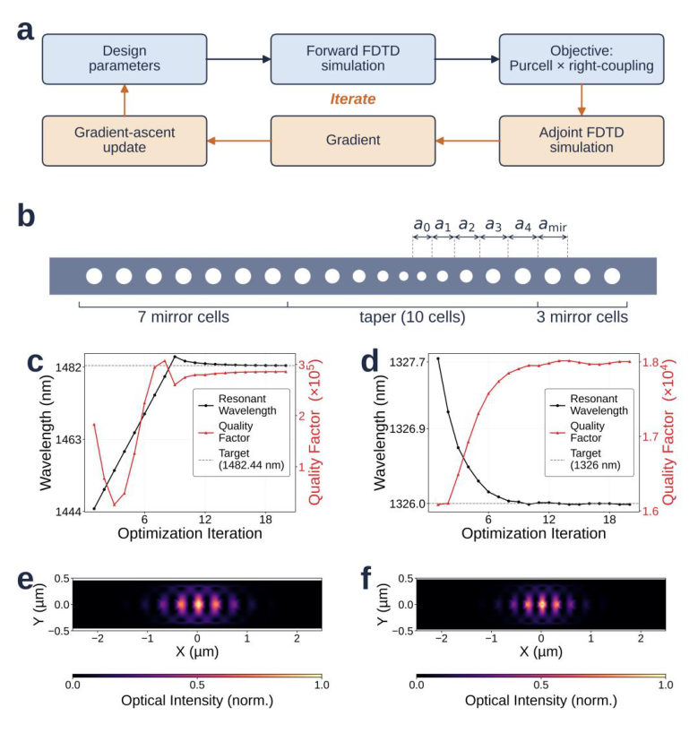
<figcaption class="paper-figure-caption"><b>Fig 1.</b> Figure 1. Inverse-design framework, cavity geometry, and optimization convergence for</figcaption>
</figure>
<figure class="paper-figure-card">
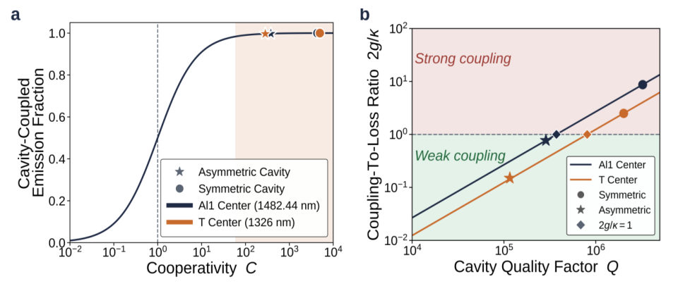
<figcaption class="paper-figure-caption"><b>Fig 2.</b> Figure 3. Cavity-QED figures of merit for the T- and Al1-center nanobeam cavities. (a)</figcaption>
</figure>
<figure class="paper-figure-card">
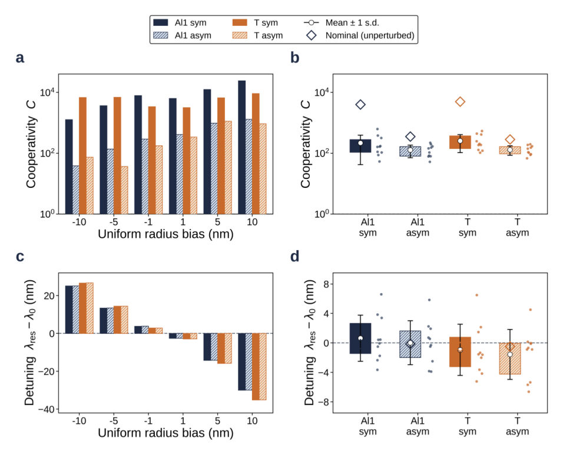
<figcaption class="paper-figure-caption"><b>Fig 3.</b> Figure 4. Robustness of the inverse-designed cavities to hole-pattern perturbations. (a)</figcaption>
</figure>
</div>

<p><strong>Summary.</strong> This paper presents an inverse-design methodology to engineer silicon nanobeam cavities optimized for coupling spin defects (T and Al1 centers) to photons. By simultaneously optimizing for Purcell enhancement and directional coupling, the authors achieve high cooperativities necessary for quantum information transfer. This provides a scalable, fabrication-compatible route for integrated quantum photonic devices.</p>
<p><strong>Why it may be interesting.</strong> This work directly addresses the engineering challenge of coupling solid-state quantum emitters to photonic circuits, which is central to building scalable quantum networks and quantum repeaters.</p>
<details>
<summary>Detailed structure</summary>
<p><strong>Main problem.</strong> The core challenge is creating efficient spin-photon interfaces to transfer quantum information from stationary spin memories to flying photonic qubits for integrated quantum networks.</p>
<p><strong>Main result.</strong> The authors successfully designed two complementary cavity geometries—symmetric and asymmetric—that achieve high cooperativities ($\approx 280-5000$) for silicon spin defects like the T and Al1 centers.</p>
<p><strong>Method.</strong> They employed a unified adjoint-optimization framework within 3D FDTD simulations to simultaneously optimize Purcell enhancement, resonance alignment, and directional photon extraction.</p>
<p><strong>Model / system.</strong> The system involves telecom-band spin defects (T and Al1 centers) embedded in silicon, coupled to engineered silicon nanobeam cavities. The design process optimizes the cavity geometry to maximize the coupling rate ($g$) relative to decoherence rates.</p>
<p><strong>Key observables.</strong> Cooperativity ($C$), Purcell Factor ($F_P$), and the fraction of emitted power coupled into the on-chip waveguide ($eta_R$).</p>
<p><strong>Important parameters / regimes.</strong> High cooperativity ($C \gg 1$), fabrication-compatible lattice parameters, and the ability to maintain performance under realistic absorption-limited quality factors ($Q \approx 10^5$).</p>
<p><strong>Assumptions / limitations.</strong> The optimization is restricted to modifying lattice parameters of a conventional nanobeam structure, ensuring fabrication compatibility.</p>
<p><strong>Figures summary.</strong> The figures illustrate the adjoint-optimization pipeline, comparing the operating principles of symmetric (for maximal Purcell enhancement) and asymmetric (for directional coupling) cavity designs.</p>
<p><strong>Paper structure.</strong> The paper establishes the physical need for high-cooperativity interfaces, details the adjoint-optimization methodology for cavity design, presents the results for two complementary cavity types, and confirms the robustness of these designs against fabrication imperfections.</p>
</details>
<details>
<summary>Abstract</summary>
<p>Telecom-band spin defects in silicon offer a compelling platform for integrated quantum networks by combining scalable silicon photonics with spin-based quantum memories and multiqubit registers. The T center and recently demonstrated Al1 center are particularly promising, but their limited coherent zero-phonon emission requires strong cavity enhancement for efficient spin-photon interfaces. Here, we inverse-design silicon nanobeam cavities for both centers using a unified adjoint-optimization framework targeting Purcell enhancement, resonance alignment, and photon extraction. For each emitter, symmetric cavities maximize Purcell enhancement, while asymmetric cavities provide directional coupling to an integrated waveguide. Three-dimensional finite-difference time-domain simulations yield loaded quality factors up to 3.25 x 10^6, Purcell factors up to 1.43 x 10^5, and cooperativities of approximately 280-5000, corresponding to cavity-coupled emission fractions exceeding 99.6%. The asymmetric cavities direct approximately 90% of emitted power into a single on-chip waveguide while maintaining cooperativity above 280. Under nanometer-scale fabrication perturbations, all four designs remain within the high-cooperativity regime, and high cooperativity persists when the cavity quality factor is constrained to a realistic absorption-limited value of 10^5. This unified, fabrication-compatible framework establishes a scalable cavity-design route for silicon telecom spin-photon interfaces and, to our knowledge, the first cavity designs for the Al1 center.</p>
</details>
<p><sub><a href="#top">↑ back to top</a></sub></p>

<p><a id="paper-2609.32116"></a></p>
<h3 id="escaping-alignment-a-physical-trap-model-of-best-of-n-jailbreaking"><a href="http://arxiv.org/abs/2609.32116v1">Escaping Alignment: A Physical Trap Model of Best-of-N Jailbreaking</a></h3>
<p><strong>Authors:</strong> Marco Biroli<br>
<strong>Type:</strong> theory · <strong>Category:</strong> statistical mechanics · <strong>PDF:</strong> <a href="https://arxiv.org/pdf/2609.32116v1">https://arxiv.org/pdf/2609.32116v1</a><br>
<strong>Analysis basis:</strong> full PDF text, analyzed in chunks
<strong>Topic relevance:</strong> <code>Keldysh / 2PI / non-Gaussian methods</code> <strong>1/5</strong> · <code>driven-dissipative phase transition</code> <strong>1/5</strong> · <code>methods for driven-dissipative</code> <strong>1/5</strong> · <code>non-equilibrium universality</code> <strong>1/5</strong> · <code>scars &amp; prethermalization</code> <strong>1/5</strong></p>
<div class="figure-strip-hint">↔ Scroll figures horizontally</div>
<div class="paper-figures-scroll">
<figure class="paper-figure-card">
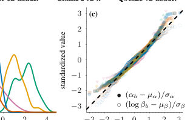
<figcaption class="paper-figure-caption"><b>Fig 1.</b> Figure 2: Universal laws. Across prompts, αb is Gaussian and βb log-normal. Panel (c) shows how standardized per-prompt parameters collapse onto N(0, 1).</figcaption>
</figure>
<figure class="paper-figure-card">
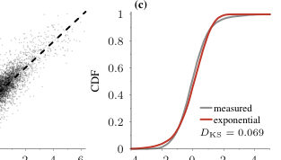
<figcaption class="paper-figure-caption"><b>Fig 2.</b> Figure 3: Geometry of the residual stream. (a) Effective free energy along a supervised safety readout after balancing each population. Average projection along a single direction separates completions into two safe/unsafe regions. (b) The saddle ηb,a predicted from the augmented prompt alone against the measured per-augmentation rate. (c) The distribution of the recovered ηb,a, against the exponential assumption pushed through the same estimator.</figcaption>
</figure>
<figure class="paper-figure-card">
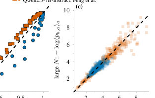
<figcaption class="paper-figure-caption"><b>Fig 3.</b> Figure 4: Extrapolation (closer to the diagonal = better). We fit (αb, βb) on a small N ≤100, M ≤30 grid. Extrapolate its predictions and compare with two baselines: a power-law and Feng et al. (2026) Beta fit. In panel (a) we extrapolate to large N ∼104. Feng et al. (2026) and our predictions are identical for the 3B model but we are considerably more accurate on Qwen7B. In panel (b), we extrapolate to large M ∼300. In panel (c), the effective barrier −log⟨pb,a⟩a is measured two independent ways, on the 100 × 300 grid versus on the 104 × 1 grid. Both agree at r = 0.85 (3B) and 0.96 (7B).</figcaption>
</figure>
<figure class="paper-figure-card">
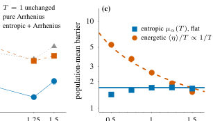
<figcaption class="paper-figure-caption"><b>Fig 4.</b> Figure 5: Temperature dependence. (a-b) Predicting a new decoding temperature from T = 1 data alone. Pure Arrhenius p(T) = p(1)1/T (dashed) overstates the effect of temperature in both directions. Our model keeps the entropic barrier outside the 1/T (Eq. (21)) with αb fitted on the T = 1 data (blue) which reduces the error fourfold. (c) The barrier is entropic (constant in T), the saddles are energetic (∝1/T).</figcaption>
</figure>
<figure class="paper-figure-card">
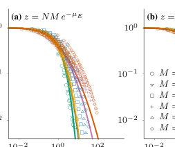
<figcaption class="paper-figure-caption"><b>Fig 5.</b> Figure 6: Scaling collapse of the AFR. In panel (a) we show the small-M closed-form leading order which although mostly accurate starts to deviate at large-z for larger values of M. In panel (b) we use the M-agnostic form which remains accurate at large-z for all M. Finally in panel (c) we show a few examples of the scaling function fγ(z) for varying values of the shape parameter γ.</figcaption>
</figure>
</div>

<p><strong>Summary.</strong> This paper models LLM jailbreaking as a physical process of escaping a safety barrier using a 'barrier model' derived from statistical physics. It predicts that the attack success rate deviates from simple power-law scaling, suggesting that the observed scaling in prior work is an artifact of limited data. The framework provides a universal, physics-based tool to map the entire attack surface based on fundamental safety parameters.</p>
<p><strong>Why it may be interesting.</strong> The use of concepts like entropic barriers, thermal activation, and glassy dynamics to model information security vulnerabilities provides a novel, physics-grounded framework for understanding complex, non-equilibrium failure modes in AI systems.</p>
<details>
<summary>Detailed structure</summary>
<p><strong>Main problem.</strong> The paper analyzes Best-of-N jailbreaking (BoN) attacks on LLMs, challenging the established power-law scaling of the Attack Success Rate (ASR) with the number of augmentations ($N$).</p>
<p><strong>Main result.</strong> The ASR does not follow a clean power-law, and the previously observed exponential crossover is predicted to be a finite-size artifact of the adversarial dataset.</p>
<p><strong>Method.</strong> The authors introduce a physical 'barrier model' inspired by glassy dynamics, treating jailbreaking as escaping a 'Safe Basin' through an 'Entropic Bottleneck' governed by thermally activated processes.</p>
<p><strong>Model / system.</strong> The model uses a barrier analogy where safety is separated by a hyperplane, and the probability of unsafe completion is governed by an Arrhenius-like factor involving prompt-specific barriers ($\alpha_b$) and augmentation-specific saddles ($\eta_{b,a}$).</p>
<p><strong>Key observables.</strong> Attack Success Rate (ASR) as a function of the two budgets ($N, M$), and the effective barrier parameters ($\mu_E, \sigma_E$).</p>
<p><strong>Important parameters / regimes.</strong> The model is parameterized by four core numbers ($\mu_\alpha, \sigma_\alpha, \mu_eta, \sigma_eta$) describing the distributions of the entropic and energetic barriers.</p>
<p><strong>Assumptions / limitations.</strong> The model assumes LLM residuals behave linearly in a high-dimensional space and that the energy landscape within the hyperplane is rugged with exponentially distributed minima.</p>
<p><strong>Figures summary.</strong> Figures illustrate the physical mechanism (Safe Basin $    o$ Entropic Bottleneck $    o$ Unsafe Basin) and show how the model collapses multiple distinct empirical datasets onto a single scaling function.</p>
<p><strong>Paper structure.</strong> The paper develops the mathematical framework by defining the probability of unsafe completion (Eq. 1) and the overall ASR (Eq. 2). It then derives approximations for the large-$N$ and low-budget limits, fitting the model parameters to empirical data across various augmentation scales ($\sigma$).</p>
</details>
<details>
<summary>Abstract</summary>
<p>Best-of-$N$ jailbreaking (BoN) bypasses safeguards of aligned models by drawing $N$ independent augmentations of an unsafe prompt and sampling $M$ completions of each. Previous works have shown that the attack success rate (ASR) seems to follow a power-law in $N$, which we challenge. The exponent drifts with $N$, with an exponential crossover which is a finite-size artifact of the adversarial dataset. Little work has been done to explore the entire two-budget ($N, M$) attack surface as well as its dependence on the generation temperature $T$. We introduce a simple barrier model where each prompt has a baseline safety level and each augmentation a random thermally activated barrier. Then four numbers, each backed by an interpretable safety mechanism, determine the entire ($N, M$) attack surface. They extrapolate predictions from $N \leq 100$ to $N = 10^4$, collapse five distinct models on the same scaling function and predict ASR at different temperatures from the one they were fitted at.</p>
</details>
<p><sub><a href="#top">↑ back to top</a></sub></p>

<p><a id="paper-2609.35112"></a></p>
<h3 id="from-quantum-to-classical-dissipative-spin-dynamics"><a href="http://arxiv.org/abs/2609.35112v1">From Quantum to Classical Dissipative Spin Dynamics</a></h3>
<p><strong>Authors:</strong> Alireza Ataei, Leila Ataei, Olle Eriksson, Vahid Azimi Mousolou<br>
<strong>Type:</strong> theory · <strong>Category:</strong> other · <strong>PDF:</strong> <a href="https://arxiv.org/pdf/2609.35112v1">https://arxiv.org/pdf/2609.35112v1</a><br>
<strong>Analysis basis:</strong> full PDF text, analyzed in chunks
<strong>Topic relevance:</strong> <code>Keldysh / 2PI / non-Gaussian methods</code> <strong>1/5</strong> · <code>correlated / nonlocal dissipation</code> <strong>1/5</strong> · <code>driven-dissipative phase transition</code> <strong>1/5</strong> · <code>methods for driven-dissipative</code> <strong>1/5</strong> · <code>quantum measurements</code> <strong>1/5</strong></p>
<div class="figure-strip-hint">↔ Scroll figures horizontally</div>
<div class="paper-figures-scroll">
<figure class="paper-figure-card">
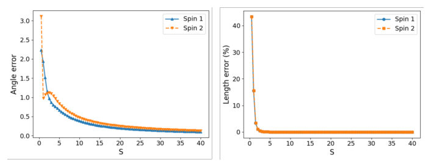
<figcaption class="paper-figure-caption"><b>Fig 1.</b> FIG. 1. The angle and length errors, respectively defined by Eqs. (70) and (71), quantify the deviations between the magneti- zations obtained from the quantum and classical LLG evolutions as a function of the spin number S. The angle error is given in radians, while the length error is given as a percentage.</figcaption>
</figure>
<figure class="paper-figure-card">
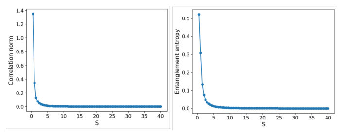
<figcaption class="paper-figure-caption"><b>Fig 2.</b> FIG. 2. Maximum spin-spin correlation norm, Cmax given in Eq. (73), and entanglement entropy, Smax given in Eq. (75), through QLLG dynamics as a function of spin number S. The maximum is taken over the intervals t ∈[0, 2] and B ∈[0, 2], with time t and magnetic field strength B measured in units of ℏ/J and J/µ, respectively. The plots confirm that quantum correlations vanish in the classical limit at any time and for any magnetic field strength.</figcaption>
</figure>
<figure class="paper-figure-card">
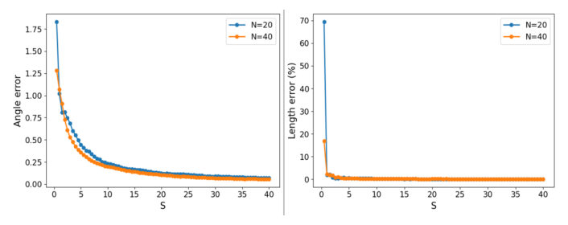
<figcaption class="paper-figure-caption"><b>Fig 3.</b> FIG. 3. Angle and length errors as functions of the spin quantum number S for Heisenberg chains with N = 20 and N = 40 spins, where the angle error given in radians and the length error as a percentage.</figcaption>
</figure>
</div>

<p><strong>Summary.</strong> This paper establishes a rigorous quantum-to-classical correspondence by deriving the classical Landau-Lifshitz-Gilbert equation from the quantum QLLG equation in the large-spin limit. It confirms that quantum effects diminish as the spin number increases, providing a foundational understanding of dissipative spin dynamics.</p>
<p><strong>Why it may be interesting.</strong> This work provides a fundamental, microscopic quantum foundation for the phenomenologically successful LLG equation, which is crucial for understanding magnetization dynamics in spintronics and magnetic materials.</p>
<details>
<summary>Detailed structure</summary>
<p><strong>Main problem.</strong> The paper aims to rigorously derive the classical Landau-Lifshitz-Gilbert (LLG) equation as the classical large-spin limit of the quantum Landau-Lifshitz-Gilbert (QLLG) equation for interacting spin systems.</p>
<p><strong>Main result.</strong> The QLLG dynamics are shown to converge to the classical LLG dynamics on the product spin-coherent state manifold in the large-spin limit, establishing a microscopic quantum-to-classical description.</p>
<p><strong>Method.</strong> The derivation involves analyzing the dynamics restricted to the coherent-state manifold and calculating error metrics (angle and length errors) to quantify the convergence rate.</p>
<p><strong>Model / system.</strong> The system models dissipative magnetization dynamics in magnetic materials using quantum spin systems governed by a Hamiltonian including Zeeman and exchange interactions. The dynamics are described by the QLLG master equation.</p>
<p><strong>Key observables.</strong> Local normalized magnetization vector ($\mathbf{m}_i$), Angle Error ($   heta_i$), Length Error ($\delta_i$), and quantum correlation measures ($C_{\max}$, $S_{\max}$).</p>
<p><strong>Important parameters / regimes.</strong> Large spin number ($S 	o \infty$), number of spins ($N$), and the damping parameter ($\alpha$ or $\kappa$).</p>
<p><strong>Assumptions / limitations.</strong> The analysis relies on the large-spin limit ($S 	o \infty$) and the assumption that the state remains asymptotically confined to the product of local spin-coherent states.</p>
<p><strong>Figures summary.</strong> Figures illustrate the convergence of angle and length errors, showing that quantum correlations vanish in the large-$S$ limit, and that quantum effects diminish for larger spin chains ($N$).</p>
<p><strong>Paper structure.</strong> The paper first introduces the LLG and QLLG equations, then analytically derives the classical limit on the coherent-state manifold, and finally verifies this convergence numerically by comparing the dynamics and measuring various error metrics.</p>
</details>
<details>
<summary>Abstract</summary>
<p>The Landau-Lifshitz-Gilbert (LLG) equation provides the fundamental description of dissipative magnetization dynamics. A recently proposed quantum analog, the quantum Landau-Lifshitz-Gilbert (QLLG) equation, extends this framework to quantum spin systems. However, whether the QLLG equation recovers the LLG equation in the classical large-spin limit for interacting spin systems remains an open question. Here, we demonstrate this connection by deriving the LLG equation as the classical large-spin limit of the QLLG equation. We establish this correspondence analytically and verify it numerically for an interacting spin system. These results provide a quantum-to-classical description of dissipative spin dynamics, offering a microscopic foundation for the LLG equation. From numerical calculations provided here, we also conclude that quantum effects become much less noticeable for systems with larger number of spins in the Hamiltonian.</p>
</details>
<p><sub><a href="#top">↑ back to top</a></sub></p>

<p><a id="paper-2609.34609"></a></p>
<h3 id="global-synchronization-of-topological-signals-with-time-delayed-interactions"><a href="http://arxiv.org/abs/2609.34609v1">Global synchronization of topological signals with time-delayed interactions</a></h3>
<p><strong>Authors:</strong> Wilfried Segnou, Thierry Njougouo, Diego Garlaschelli, Timoteo Carletti<br>
<strong>Type:</strong> theory · <strong>Category:</strong> statistical mechanics · <strong>PDF:</strong> <a href="https://arxiv.org/pdf/2609.34609v1">https://arxiv.org/pdf/2609.34609v1</a><br>
<strong>Analysis basis:</strong> full PDF text, analyzed in chunks
<strong>Topic relevance:</strong> <code>analog quantum simulation</code> <strong>1/5</strong> · <code>correlated / nonlocal dissipation</code> <strong>1/5</strong> · <code>driven-dissipative phase transition</code> <strong>1/5</strong> · <code>non-equilibrium universality</code> <strong>1/5</strong></p>
<div class="figure-strip-hint">↔ Scroll figures horizontally</div>
<div class="paper-figures-scroll">
<figure class="paper-figure-card">
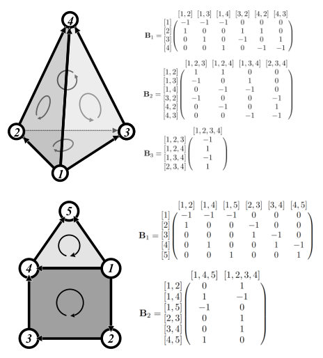
<figcaption class="paper-figure-caption"><b>Fig 1.</b> FIG. 1: 3-simplicial complex and 2-cell complex. The top right panel shows a tetrahedron, i.e., a 3- simplicial complex, while the top right panel displays the three associated incidence matrices. The bottom left panel, depicts a 2-cell complex consisting of nodes, links, a triangle and a square, the bottom right panel reports the two associated incidence matrices. In both cases, edges orientations are denoted by the arrows drawn on the latter, while the faces by the curved arrows.</figcaption>
</figure>
<figure class="paper-figure-card">
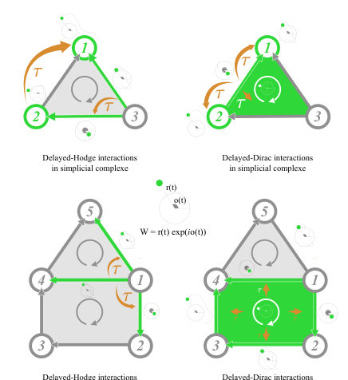
<figcaption class="paper-figure-caption"><b>Fig 2.</b> FIG. 2: Schematic representation of delayed Hodge interactions and delayed Dirac interactions. Top panels illustrate delayed interactions mediated by the Hodge-Laplacian and the Dirac operator in a simplicial complex, whereas the bottom panels depict the corre- sponding interactions in a cell complex. Simplexes and cells are oriented, with straight arrows on links and curved arrows for 2-simplexes or 2-cells. Green highlights the simplexes, or cells, involved in each interaction, while orange arrows indicate how one simplex, or cell, influ- ences the dynamics of another through an interaction with time delay τ.</figcaption>
</figure>
<figure class="paper-figure-card">
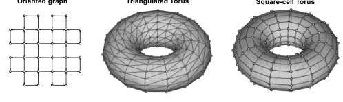
<figcaption class="paper-figure-caption"><b>Fig 3.</b> FIG. 3: Complexes used to illustrate the topolog- ical constraints for GTS.. We present the structures used to perform the numerical results; on the left we have an oriented graph, i.e., a 1-simplicial complex, in the mid- dle the oriented triangulated torus, and on the right the oriented square-cell torus. We have deliberately omitted the orientations in the last two images for the sake of clarity.</figcaption>
</figure>
<figure class="paper-figure-card">
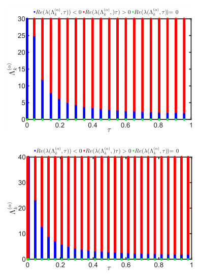
<figcaption class="paper-figure-caption"><b>Fig 4.</b> FIG. 4: Master Stability Function versus the ad- missible delay, τp, and the eigenvalues of the Hodge-Laplace matrix, Λ(k) α . The top panel shows the sign of the MSF for eigenvalues Λ(k) α and discrete values of τp obtained with parameters µ = 0.1+0.5i, σ = 1+2i, β = 1 + 50πi and a = 2. Each vertical bar corresponds to the MSF as a function of Λ(k) α for a given τp obtained from Eq. (14). Blue indicates a negative MSF, while red indicates a positive MSF. The lower panel shows a simi- lar result, this time with µ = 0.1 −0.5i.</figcaption>
</figure>
<figure class="paper-figure-card">
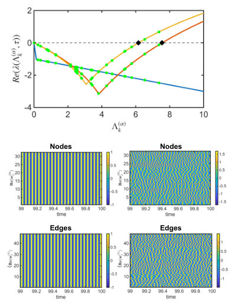
<figcaption class="paper-figure-caption"><b>Fig 5.</b> FIG. 5: Topological Desynchronization of Stuart- Landau oscillators induced by time delay. Top panel displays the MSF for different values of τ. The blue curve is obtained for τ = 0, whilst the red and or- ange curves are obtained respectively for τ4 = (arg (µ) − 2·4π)/ω and τ5 = (arg (µ)−2·5π)/ω, the model param- eters are σ = 1 + 2i, β = 1 + 50πi, µ = 0.1 + 0.5i and a = 2. The network (shown in the left panel of Fig. 3) con- tains N = 32 nodes and E = 48 edges. The green points represent the eigenvalues of the Hodge-Laplacian matrix for the nodes and edges, both having the same nonzero eigenvalues. Black diamonds correspond to the bifurca- tion points calculated based on Eq. (23) and Eq....</figcaption>
</figure>
</div>

<p><strong>Summary.</strong> This work analyzes global synchronization in topological oscillators defined on complexes, incorporating the effects of time delays. It distinguishes between coupling via the Hodge-Laplace matrix and the Dirac operator, finding that delays can promote synchronization in one case but prevent it in the other. The findings highlight the critical role of coupling structure and delay time in determining the stability of collective states.</p>
<p><strong>Why it may be interesting.</strong> The study of synchronization in complex, structured systems using delay dynamics provides a rich theoretical framework applicable to pattern formation and collective behavior in many physical systems, including those modeled by network dynamics.</p>
<details>
<summary>Detailed structure</summary>
<p><strong>Main problem.</strong> The paper investigates how time-delayed interactions affect the emergence of global synchronization in topological signals defined on higher-order structures like simplicial or cell complexes.</p>
<p><strong>Main result.</strong> Global Topological Synchronization (GTS) can emerge for signals coupled via the Hodge-Laplacian with suitable delays, but Global Topological Dirac Synchronization (GTDS) cannot emerge under the same conditions, and delay can both promote and suppress synchronization depending on the coupling operator.</p>
<p><strong>Method.</strong> The analysis involves deriving the Master Stability Function and solving transcendental characteristic equations using the Lambert W-function for delayed differential equations.</p>
<p><strong>Model / system.</strong> The system models topological signals (dynamical variables) supported on $k$-simplices or $k$-cells, whose time evolution is governed by delayed differential equations coupled via the Hodge-Laplace matrix or the Dirac operator.</p>
<p><strong>Key observables.</strong> Global synchronization state (order parameters), dispersion relations, and the time evolution of complex amplitudes.</p>
<p><strong>Important parameters / regimes.</strong> The time delay ($   au$), the coupling operator (Hodge-Laplace vs. Dirac), and the specific geometry of the complex (e.g., torus).</p>
<p><strong>Assumptions / limitations.</strong> The analysis often assumes homogeneous delays and relies on exploiting the Hodge or Dirac decomposition to simplify the stability analysis.</p>
<p><strong>Figures summary.</strong> Figures illustrate the complexes used (e.g., 1-simplicial, 2-cell torus) and show time evolution of order parameters comparing synchronized vs. desynchronized states under delayed vs. non-delayed coupling.</p>
<p><strong>Paper structure.</strong> The paper progresses by first defining topological signals, then analyzing delayed interactions for same-dimension signals (Hodge-Laplacian), and finally addressing different-dimension signals (Dirac operator).</p>
</details>
<details>
<summary>Abstract</summary>
<p>Topological signals are dynamical variables supported on higher-order structures such as simplicial or cell complexes. In this work, we investigate the impact of time-delayed interactions on the emergence of global synchronization of topological oscillators, with application to the Stuart-Landau system. We first examine the case where signals are supported on simplexes, or cells, of a given dimension and coupled through the Hodge-Laplace matrix. We derive the Master Stability Function and we prove that for suitable discrete delay values, the stability of the synchronous solution becomes analytically tractable and can be solved by using the Lambert W-function. This analysis yields explicit spectral conditions for Global Topological Synchronization to emerge and shows that admissible delays may either promote or suppress synchronization. We then study delayed interactions between signals supported on simplexes, or cells, of different dimensions coupled by the Dirac operator. Under analogous admissible time delays the variational problem, still related to the Master Stability Function, can again be simplified, however in this case we prove that Global Topological Dirac Synchronization cannot emerge. Numerical simulations on simplicial and cell complexes corroborate and complement these findings.</p>
</details>
<p><sub><a href="#top">↑ back to top</a></sub></p>

<p><a id="paper-2609.33006"></a></p>
<h3 id="periodically-modulated-traveling-waves-in-integrate-and-fire-networks-recursive-speed-law-and-propagation-failure"><a href="http://arxiv.org/abs/2609.33006v1">Periodically modulated traveling waves in integrate-and-fire networks: recursive speed law and propagation failure</a></h3>
<p><strong>Authors:</strong> Jie Nissel, Ricardo Erazo-Toscano, Rosahn Bhattarai, Marius Osan, Mandeep Chauhan, Remus Osan<br>
<strong>Type:</strong> theory · <strong>Category:</strong> disordered systems and neural networks · <strong>PDF:</strong> <a href="https://arxiv.org/pdf/2609.33006v1">https://arxiv.org/pdf/2609.33006v1</a><br>
<strong>Analysis basis:</strong> full PDF text, analyzed in chunks
<strong>Topic relevance:</strong> <code>Frenkel-Kontorova</code> <strong>1/5</strong> · <code>analog quantum simulation</code> <strong>1/5</strong> · <code>driven-dissipative phase transition</code> <strong>1/5</strong> · <code>non-equilibrium universality</code> <strong>1/5</strong></p>
<div class="figure-strip-hint">↔ Scroll figures horizontally</div>
<div class="paper-figures-scroll">
<figure class="paper-figure-card">
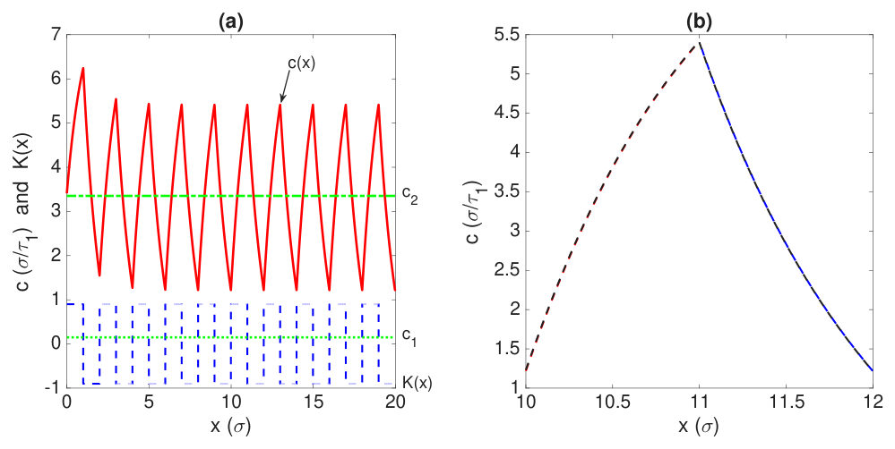
<figcaption class="paper-figure-caption"><b>Fig 1.</b> FIG. 1: Traveling-wave speed with piecewise-constant (alternating ±ϵ) inhomogeneity. (a) Speed versus space under the alternating modulation. The solid red line denotes the propagating periodic speed versus space (x) under the influence of the piecewise-constant inhomogeneity K(x), drawn as the dashed blue line; the dotted and dash-dot green lines mark the homogeneous speeds c1 and c2. (b) Firing-map simulation vs. closed-form solution x(c) (Eq. 8). The solid black line denotes the first-spike firing-map simulation of the network; the dashed red and blue lines are the closed-form solution (Eq. 8) for the positive (+ϵ) and negative (−ϵ) phases, respectively. Parameters: λ = 1, ϵ = 0.9,...</figcaption>
</figure>
<figure class="paper-figure-card">
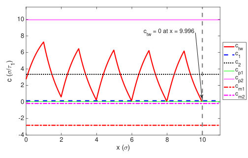
<figcaption class="paper-figure-caption"><b>Fig 2.</b> FIG. 2: Traveling-wave speed and the per-phase critical speeds under alternating constant inhomogeneity. The thick solid red curve is the traveling-wave speed ctw(x) for the piecewise-constant ±ϵ modulation (λ = 1, ϵ = 1.3, default network). During each excitatory (+ϵ) half-period the speed climbs toward the stable positive-phase equilibrium cp2 ≈10 (upper magenta, thin solid) and away from the unstable cp1 ≈0.05 (green, thin solid); the homogeneous speeds c1 ≈0.15 (blue dashed) and c2 ≈3.35 (black dotted) are drawn for reference. At this amplitude the inhibitory-phase roots are both negative, cm1 ≈−2.8 (red dash-dot) and cm2 ≈−0.2 (magenta dash-dot), so there is no positive equilibrium in...</figcaption>
</figure>
<figure class="paper-figure-card">
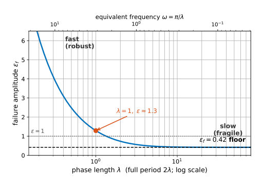
<figcaption class="paper-figure-caption"><b>Fig 3.</b> FIG. 3: Failure amplitude ϵf vs. phase length λ (full period 2λ, equivalent frequency ω = π/λ on the top axis; log scale), alternating ±ϵ inhomogeneity. ϵf(λ) is the largest amplitude admitting a periodic wave, from the period-closure conditions (Eqs. 14–15). It decreases monotonically from a 1/λ-like divergence at small λ (fast modulation, robust) to the slow-limit floor ϵf = (√c2 −√c1)2/(σB) = 0.42 (dashed) as λ →∞. The orange marker at λ = 1 (ϵ ≈1.3) is the case of Fig. 2. Above the dotted line ϵ = 1 the modulated coupling changes sign in the negative blocks (Sec. II). The slow limit is the least robust, with failure set by the trough (extreme), not the average. Default network...</figcaption>
</figure>
<figure class="paper-figure-card">
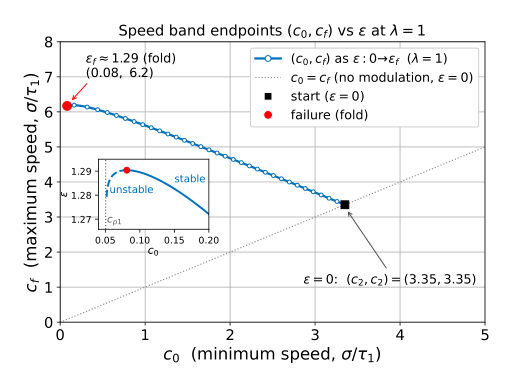
<figcaption class="paper-figure-caption"><b>Fig 4.</b> FIG. 4: Speed-band endpoints (c0, cf) traced as ϵ increases, at fixed λ = 1 (Eqs. 14–15). The blue curve is the locus of the minimum (c0) and maximum (cf) wave speeds as ϵ grows from 0 to ϵf. At ϵ = 0 both equal the homogeneous speed c2 (black square, on the c0 = cf diagonal); as ϵ grows the band widens (c0 falls, cf rises) until propagation fails at ϵf ≈1.29, where the stable periodic wave meets an unstable periodic orbit in a fold ((c0, cf) ≈(0.08, 6.2), red). Inset: ϵ along the branch near the fold; the stable wave (solid) and the unstable orbit (dashed) meet at ϵf, where c0 is still above the threshold cp1 ≈0.05 (dotted).</figcaption>
</figure>
<figure class="paper-figure-card">
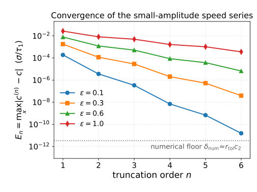
<figcaption class="paper-figure-caption"><b>Fig 5.</b> FIG. 5: Convergence of the speed series. Maximum error En = maxx |c(n) −c| over one period of the order-n truncation versus the numerically integrated speed (ω = π, default parameters), for several amplitudes ϵ. The error decreases geometrically with order, rapidly for small ϵ (reaching ∼10−11 by sixth order at ϵ = 0.1) and progressively more slowly as ϵ approaches 1; six orders do not determine the radius of convergence (see text). The dotted line is the numerical floor δnum ≈rtolc2 set by the reference-integration tolerance; errors at or below it reflect integration/interpolation noise rather than truncation.</figcaption>
</figure>
</div>

<p><strong>Summary.</strong> This work analyzes traveling waves in spiking neural networks subjected to periodic spatial coupling variations. It derives a reduced speed law and determines that wave propagation failure is dictated by the modulation's local minimum (trough) in the slow limit, or by a linear frequency dependence in the fast limit. The findings provide quantitative criteria for understanding how disorder limits activity propagation in biological models.</p>
<p><strong>Why it may be interesting.</strong> The study of wave propagation failure in complex, non-linear systems like neural networks provides an analogy for understanding pattern formation and stability in many-body systems, which can relate to phase transitions or localization phenomena in condensed matter.</p>
<details>
<summary>Detailed structure</summary>
<p><strong>Main problem.</strong> The paper investigates how periodic spatial inhomogeneities in synaptic coupling affect traveling waves of activity in integrate-and-fire neural networks, focusing on the resulting speed law and conditions for wave propagation failure.</p>
<p><strong>Main result.</strong> The failure mechanism depends on the modulation's variation: for slow changes, failure is governed by the trough of the modulation, while for rapid changes, the failure amplitude grows linearly with frequency. The speed law is characterized by two distinct homogeneous speeds, $c_1$ and $c_2$.</p>
<p><strong>Method.</strong> The analysis involves reducing the leading-edge firing map to a scalar ODE, employing perturbative recursion, and analyzing the system in different modulation regimes (slowly vs. rapidly varying).</p>
<p><strong>Model / system.</strong> The system is an integrate-and-fire neural network where synaptic coupling decays exponentially and is subjected to a periodic modulation $K(y)$. The dynamics are governed by an acceleration-speed relation derived from the firing map.</p>
<p><strong>Key observables.</strong> Wave speed profile $c(x)$, fold amplitude (failure criterion), and launch threshold (failure criterion).</p>
<p><strong>Important parameters / regimes.</strong> Modulation frequency ($\omega$), coupling strength ($\epsilon$), and the ratio of time constants ($   au_1,   au_2$).</p>
<p><strong>Assumptions / limitations.</strong> The analysis relies on the exponential decay of coupling allowing reduction to a scalar law, and the $\epsilon > 1$ regime is treated as a hypothesized extension.</p>
<p><strong>Figures summary.</strong> Figures illustrate the periodic speed profile under alternating modulation, compare analytical solutions to direct simulations, and present phase diagrams defining the launch threshold $\epsilon_f$ for various modulation shapes.</p>
<p><strong>Paper structure.</strong> The paper first establishes the reduced ODE for the leading edge, then analyzes the behavior under slow and fast modulation limits, providing explicit solutions for piecewise-constant and cosine modulations, and finally discusses the distinction between wave loss and launch failure.</p>
</details>
<details>
<summary>Abstract</summary>
<p>Traveling waves of activity in neural tissue can be halted by spatial inhomogeneity in synaptic coupling. We study an integrate-and-fire network in which each neuron fires once and the coupling decays exponentially. For this model the leading-edge firing map reduces exactly to a scalar equation for the wave speed in space, with a slow unstable and a fast stable homogeneous speed, $c_1$ and $c_2$, and a periodic modulation of the coupling enters this equation pointwise. Positive periodic waves terminate in folds. For slowly varying modulation the fold amplitude approaches a plateau set by the trough of the modulation, where the local bottleneck speed is $\sqrt{c_1 c_2}$; the approach to the plateau is set by the local geometry of the trough. For rapidly varying modulation the fold amplitude grows linearly with frequency, with a slope given by a full-amplitude average over the integrated modulation profile; a weak-ripple truncation of that average overestimates the slope about 2.5-fold at the default coupling. A perturbative recursion in the amplitude gives the speed profile explicitly. We distinguish loss of the periodic wave from failure of a particular launch, and the excitatory regime $ε\le 1$ from its sign-changing extension. The results are checked against direct integration of the reduced equation and first-spike firing-map simulations of the network.</p>
</details>
<p><sub><a href="#top">↑ back to top</a></sub></p>

<p><a id="paper-2609.35163"></a></p>
<h3 id="deployment-of-large-iqp-circuit-born-machines-on-qubit-limited-hardware-using-noise-injection"><a href="http://arxiv.org/abs/2609.35163v1">Deployment of Large IQP Circuit Born Machines on Qubit-Limited Hardware Using Noise Injection</a></h3>
<p><strong>Authors:</strong> Ju-Young Ryu, Wooyeong Song, Kwangil Bae, Wonhyuk Lee, Ilkwon Sohn<br>
<strong>Type:</strong> both · <strong>Category:</strong> quantum information and computing · <strong>PDF:</strong> <a href="https://arxiv.org/pdf/2609.35163v1">https://arxiv.org/pdf/2609.35163v1</a><br>
<strong>Analysis basis:</strong> full PDF text, analyzed in chunks
<strong>Topic relevance:</strong> <code>QC/QI experiment</code> <strong>1/5</strong> · <code>methods for driven-dissipative</code> <strong>1/5</strong> · <code>quantum measurements</code> <strong>1/5</strong></p>
<div class="figure-strip-hint">↔ Scroll figures horizontally</div>
<div class="paper-figures-scroll">
<figure class="paper-figure-card">
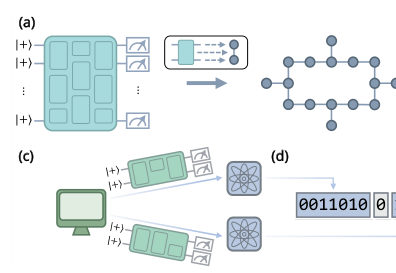
<figcaption class="paper-figure-caption"><b>Fig 1.</b> Fig. 2: Overview of the proposed noise injection-based deployment of IQP QCBMs. (a) A trained IQP QCBM is represented using an interaction graph. (b) Logical noise is injected into the circuit, which can be represented as probabilistically removing nodes from the interaction graph and creating smaller IQP circuits. (c) These smaller IQP circuits are run on qubit-limited quantum computers. (d) The outputs from each computer are concatenated along with the bits corresponding to the removed nodes. (e) If error mitigation is used, the removed node bits are resampled from classically calculated marginal distributions.</figcaption>
</figure>
<figure class="paper-figure-card">
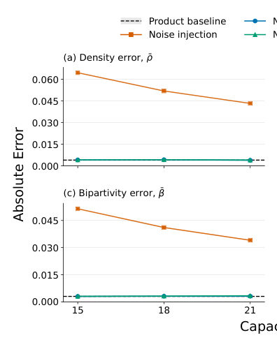
<figcaption class="paper-figure-caption"><b>Fig 2.</b> Fig. 3: Sample quality metrics. Sample-quality errors averaged over six circuits and 50 repetitions per circuit. Error bars and the product baseline band show 95% percentile bootstrap intervals for the mean, obtained from 5,000 resamples stratified by circuit. The dashed line denotes the product baseline mean. The deployment protocol without error mitigation has substantially larger errors across all metrics, although the error decreases with capacity. Both error mitigation methods reduce the errors close to the product baseline scale.</figcaption>
</figure>
<figure class="paper-figure-card">
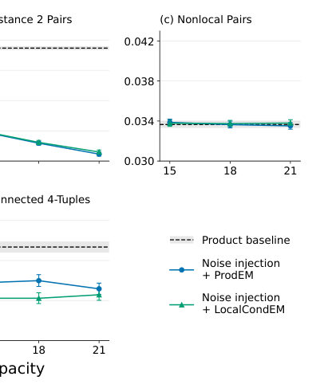
<figcaption class="paper-figure-caption"><b>Fig 3.</b> Fig. 4: Graph-informed Pauli Z word expectation value errors. Markers and the dashed lines are calculated by averaging over six circuits and 50 repetitions per cir- cuit. Error bars and the product band show 95% percentile bootstrap intervals from 5,000 resamples stratified by circuit. The protocol with error mitigation yields lower mean errors compared to the baseline on local graph-structured observables, including edge-supported pairs, distance-2 pairs, and connected three- and four-body supports, while remaining approximately equal on nonlocal pairs. LocalCondEM shows a small improvement on higher-weight correlators compared to ProdEM.</figcaption>
</figure>
<figure class="paper-figure-card">

<figcaption class="paper-figure-caption"><b>Fig 4.</b> Fig. 5: IBM experiment Pauli Z word expectation value error differences relative to the product baseline. We report observed differences ∆for various observable groups with weight w =1 or 2. Error bars indicate the recentered 95% bootstrap percentile intervals from 5,000 independent bit-string resamples of each method and the baseline. (a) The unmitigated protocol yields less accurate expectation values than the product baseline, except for distance-2 pairs, for which the errors are similar. (b) The protocol with error mitigation improves over the baseline on local graph-structured observables such as edge-supported pairs and distance-2 pairs.</figcaption>
</figure>
</div>

<p><strong>Summary.</strong> This paper presents a novel deployment protocol to run large Quantum Circuit Born Machines (QCBMs) on qubit-limited quantum hardware by injecting controlled noise. This noise probabilistically breaks the large circuit into smaller, executable clusters. By combining this decomposition with advanced error mitigation techniques, the authors demonstrate a method to maintain high fidelity in quantum generative modeling despite hardware constraints.</p>
<p><strong>Why it may be interesting.</strong> This work directly addresses the critical gap between the theoretical scale of quantum machine learning models and the physical constraints of near-term quantum hardware, providing a concrete pathway for utilizing large quantum models.</p>
<details>
<summary>Detailed structure</summary>
<p><strong>Main problem.</strong> The core challenge is deploying large Quantum Circuit Born Machines (QCBMs) built with IQP circuits onto quantum hardware that has a limited number of qubits.</p>
<p><strong>Main result.</strong> The proposed noise injection protocol successfully decomposes the large circuit into smaller, manageable clusters, and error mitigation techniques improve the fidelity of the sampled distribution compared to classical baselines.</p>
<p><strong>Method.</strong> The authors propose a noise injection protocol that probabilistically decomposes the large circuit by modeling node percolation, followed by error mitigation using local marginal or conditional distributions.</p>
<p><strong>Model / system.</strong> The system involves IQP QCBMs, which are generative quantum models. The deployment is simulated on hardware-limited platforms (e.g., 156-qubit hardware for a 316-qubit circuit) using noise injection to induce simulability.</p>
<p><strong>Key observables.</strong> Maximum Mean Discrepancy (MMD) squared, similarity of the empirical distribution to the target distribution, and correlation structures (especially local correlators).</p>
<p><strong>Important parameters / regimes.</strong> The total node removal probability ($p_p$), the target success probability ($p_{succ}$), and the size of the largest connected cluster ($L_{max}$).</p>
<p><strong>Assumptions / limitations.</strong> The protocol assumes that the resulting separable circuits are of a tractable size for classical simulation, and error mitigation relies on approximating intractable conditional sampling.</p>
<p><strong>Figures summary.</strong> Figures illustrate the IQP circuit structure, the overall deployment protocol (noise injection $
ightarrow$ small circuits $
ightarrow$ resampling), and results comparing error metrics ($\Delta$) across different mitigation techniques.</p>
<p><strong>Paper structure.</strong> The paper introduces the problem of scaling QCBMs, details the noise injection/percolation protocol for decomposition, presents error mitigation strategies (ProdEM, LocalCondEM), and validates the approach through numerical simulations and hardware deployment tests.</p>
</details>
<details>
<summary>Abstract</summary>
<p>Quantum circuit Born machines (QCBMs) built with instantaneous quantum polynomial (IQP) circuits have loss functions that can be efficiently estimated classically, but require quantum computers during inference. Thus, classical computers can train large IQP QCBMs that exceed the qubit numbers of available quantum hardware. This motivates research into how qubit-limited quantum computers can be used to sample from larger IQP QCBMs. Leveraging insights from classical simulation of noisy IQP circuits, we propose a deployment protocol for IQP QCBMs that injects noise at the logical level to probabilistically decompose the original circuit into smaller clusters that can be sampled on qubit-limited quantum processors. We also apply lightweight resampling of known noisy qubits to mitigate the impact of the introduced error. Numerical simulations of our protocol applied to shallow IQP QCBMs and IBM Heron experiments deploying a 316-qubit IQP circuit onto 156-qubit hardware show that mitigation improves the similarity of the empirical distribution to the target distribution. The proposed deployment protocol also crucially preserves correlation structures more accurately than a classical baseline that has accurate single-qubit marginals.</p>
</details>
<p><sub><a href="#top">↑ back to top</a></sub></p>

<p><a id="paper-2609.32968"></a></p>
<h3 id="how-much-do-we-understand-ce-l3-xanes-ab-initio-insights-into-configuration-specific-screening-at-the-multiplet-continuum-frontier"><a href="http://arxiv.org/abs/2609.32968v1">How Much Do We Understand Ce L3 XANES? Ab Initio Insights into Configuration-Specific Screening at the Multiplet--Continuum Frontier</a></h3>
<p><strong>Authors:</strong> Alessandro Mirone<br>
<strong>Type:</strong> theory · <strong>Category:</strong> strongly correlated electrons · <strong>PDF:</strong> <a href="https://arxiv.org/pdf/2609.32968v1">https://arxiv.org/pdf/2609.32968v1</a><br>
<strong>Analysis basis:</strong> full PDF text, analyzed in chunks
<strong>Topic relevance:</strong> <code>Keldysh / 2PI / non-Gaussian methods</code> <strong>1/5</strong> · <code>correlated / nonlocal dissipation</code> <strong>1/5</strong> · <code>quantum measurements</code> <strong>1/5</strong></p>
<div class="figure-strip-hint">↔ Scroll figures horizontally</div>
<div class="paper-figures-scroll">
<figure class="paper-figure-card">

<figcaption class="paper-figure-caption"><b>Fig 1.</b> FIG. 1. CeO2 E1 spectra for the primary (a) and secondary (b) screening potentials. The dashed curve is Gamma, the colored band spans the eight symmetry representatives of a 3 × 3 × 3 mesh, and the black curve is their multiplicity- and source-norm- weighted average. Each panel is aligned and normalized to its own averaged white line; representative spectra share that scale. In (b), dotted segments cover the two E1 features whose dominant diagnostic components are nearly fully occupied, and extend to the left edge. The change of style occurs at the minimum on their high-energy side. The dotted continuation is a display convention, not a pointwise Pauli classification. The primary curves...</figcaption>
</figure>
<figure class="paper-figure-card">

<figcaption class="paper-figure-caption"><b>Fig 2.</b> FIG. 2. CeO2 HERFD spectrum and the two calculated screening contributions, shown separately. The primary averaged white line sets energy zero and weighted unit intensity. With calculated offset ∆2 and relative weight P2/P1, the secondary maximum lies 7.31 eV above the primary. Experiment, digitized from Ref. 1, is independently centered and normalized at its measured white line for qualitative comparison. The dipole response is averaged over a 3 × 3 × 3 mesh; the remaining contribution is approximated by the difference between the combined E1+E2 and E1 responses at Γ. Calculated curves are displayed above a minimum below the respective 4f pre-edge. The dotted part of the secondary curve...</figcaption>
</figure>
<figure class="paper-figure-card">

<figcaption class="paper-figure-caption"><b>Fig 3.</b> FIG. 3. Dipole and quadrupole contributions to the Ce L3 spectra of CeO2 (left) and CePO4 (right). The top row shows the near-edge spectra, the middle row enlarges the pre-edge (E1+E2 and E1 in the CePO4 panel), and the bottom row resolves the quadrupole response. The CeO2 calculation uses the primary screening potential at Γ with 10000 Chebyshev moments and a Jackson kernel. CePO4 E1 and E1+E2 use 3000 Lanczos iterations and averages over all 27 points of a shifted 3 × 3 × 3 mesh, as described in Sec. S6 of the Supplemental Material. Pure E2 uses 10000 Jackson–Chebyshev moments at k = (1/6, 1/6, 1/6). Lorentzian HWHM is 0.3 eV in (a’) and 0.1 eV in (b’,c’), additional to Jackson smoothing...</figcaption>
</figure>
</div>

<p><strong>Summary.</strong> This theoretical study tackles the complex interpretation of Ce $L_3$ XANES spectra by developing the XSpectruplet model to couple local multiplet physics with continuum photoelectron propagation. It demonstrates that collective screening in $ ext{CeO}_2$ can generate distinct spectral features without altering the fundamental local electronic configuration. The methodology provides a rigorous framework for understanding core-level spectroscopy in strongly correlated materials.</p>
<p><strong>Why it may be interesting.</strong> This work is highly relevant to open quantum systems and many-body dynamics as it models the complex, non-perturbative interaction between localized electronic excitations (multiplets) and the continuum of photoelectron states, which is a core problem in advanced spectroscopy.</p>
<details>
<summary>Detailed structure</summary>
<p><strong>Main problem.</strong> The paper addresses the theoretical challenge of reconciling local multiplet signatures, collective core-hole screening effects, and extended photoelectron propagation when interpreting Ce $L_3$ XANES spectra.</p>
<p><strong>Main result.</strong> For $  ext{CeO}_2$, distinct spectral contributions can arise from collective screening mechanisms without implying a change in the effective local electronic configuration. The study also provides estimates for the spectral gap in $  ext{CePO}_4$ by transferring corrections from $ ext{CeO}_2$.</p>
<p><strong>Method.</strong> The authors employ the XSpectruplet framework, which couples local multiplet dynamics to continuum photoelectron propagation using self-consistent Kohn-Sham screening potentials within the PAW framework.</p>
<p><strong>Model / system.</strong> The study focuses on Cerium compounds ($    ext{CeO}_2$ and $   ext{CePO}_4$), modeling the core-ionized state using the $Z+1$ equivalent-core approximation and incorporating local multiplet structure calculations.</p>
<p><strong>Key observables.</strong> White-line maxima separation ($\sim 7.3 	ext{ eV}$ for $   ext{CeO}_2$ screening states), calculated spectral gaps ($  ext{CeO}_2$: $10.51 	ext{ eV}$ vs. $10.7 	ext{ eV}$ exp.), and squared overlaps ($P_1 \simeq 0.63, P_2 \simeq 0.30$) quantifying screening state contributions.</p>
<p><strong>Important parameters / regimes.</strong> The calculations use $  ext{PBE}+U$ with $U_{	ext{eff}} = 5 	ext{ eV}$ applied to the $4f$ subspace.</p>
<p><strong>Assumptions / limitations.</strong> The analysis relies on an independent-channel approximation, which neglects residual nonorthogonality and coupling between distinct screening channels, and involves heuristic transfer of energy corrections between different compounds.</p>
<p><strong>Figures summary.</strong> The notes detail comparisons of calculated spectral gaps and the identification of primary and secondary screening states based on their calculated white-line maxima and overlap weights.</p>
<p><strong>Paper structure.</strong> The paper progresses by defining the theoretical challenge, detailing the XSpectruplet methodology for coupling local and continuum physics, presenting results for $  ext{CeO}_2$ showing collective screening effects, and finally applying the framework to $   ext{CePO}_4$ to estimate its spectral gap.</p>
</details>
<details>
<summary>Abstract</summary>
<p>How can local multiplet signatures, collective core-hole screening, and an extended photoelectron be reconciled in Ce $L_3$ x-ray absorption near-edge spectra? Motivated by the question raised by Kvashnina [Chem. Eur. J. 30, e202400755 (2024)], we address this challenge using XSpectruplet, which couples local multiplet dynamics to continuum photoelectron propagation in self-consistent Kohn--Sham screening potentials. For Ce$^{4+}$ in CeO$_2$, our heuristic search identifies primary and secondary stationary screening states whose calculated white-line maxima lie about 7.3~eV apart after including their independently calculated total-energy difference, yet both retain the same effective local spectroscopic $4f^0$ sector. Their squared overlaps with the unrelaxed sudden reference give approximate statistical weights of 63\% and 30\%, respectively, within an independent-channel description. Their contrasting screening responses arise from collective rehybridization of occupied orbitals, rather than occupation of an additional localized $4f$ spectator, and produce contributions in both the main white-line and satellite regions. Ce$^{3+}$ in monazite CePO$_4$ provides the contrasting case of a localized $4f^1$ spectator participating explicitly in the multiplet dynamics. Independent relaxation of neutral $4f$ and white-line states gives a CeO$_2$ pre-edge--white-line gap of 10.51~eV, close to the experimental separation of approximately 10.7~eV. Its excess over the fixed-background spectral gap defines a net correction, which we transfer heuristically to CePO$_4$ without changing its local multiplet structure. This gives an estimated CePO$_4$ gap of 6.38~eV, compared with approximately 8.1~eV experimentally. Distinct spectral contributions can thus arise from collective screening without a change in the effective local configuration.</p>
</details>
<p><sub><a href="#top">↑ back to top</a></sub></p>

<p><a id="paper-2609.33784"></a></p>
<h3 id="on-mechanistically-accessible-copolymer-sequences"><a href="http://arxiv.org/abs/2609.33784v1">On mechanistically accessible copolymer sequences</a></h3>
<p><strong>Authors:</strong> Richard Golnik, Nicola Vassena, Alex Blokhuis<br>
<strong>Type:</strong> theory · <strong>Category:</strong> statistical mechanics · <strong>PDF:</strong> <a href="https://arxiv.org/pdf/2609.33784v1">https://arxiv.org/pdf/2609.33784v1</a><br>
<strong>Analysis basis:</strong> full PDF text, analyzed in chunks
<strong>Topic relevance:</strong> <code>analog quantum simulation</code> <strong>1/5</strong> · <code>driven-dissipative phase transition</code> <strong>1/5</strong> · <code>non-equilibrium universality</code> <strong>1/5</strong></p>
<div class="figure-strip-hint">↔ Scroll figures horizontally</div>
<div class="paper-figures-scroll">
<figure class="paper-figure-card">

<figcaption class="paper-figure-caption"><b>Fig 1.</b> Figure 1: k-copolymerization for s=2 monomer types ’0’, ’1’ for k=0,1,2. A corresponding regular de Bruijn graph is depicted for each k (see Fig. 2), along wiht the attainable periodic sequences, whose number is denoted by γ.</figcaption>
</figure>
<figure class="paper-figure-card">

<figcaption class="paper-figure-caption"><b>Fig 2.</b> Figure 2: Successive regular de Bruijn Graphs (k=0 to 4) for s = 2 monomers (’0’, ’1’). Each periodic sequence for k-copolymerization cor- responds to an elementary circuit in the de Bruijn graph of order k.</figcaption>
</figure>
<figure class="paper-figure-card">

<figcaption class="paper-figure-caption"><b>Fig 3.</b> Figure 3: Elementary circuits in binary de Bruijn graph for k = 2. Each elementary circuit can be represented as a subgraph, and corresponds to one of γ = 6 periodic copolymers. A circuit of r reactions corresponds to a Lyndon word of length r.</figcaption>
</figure>
<figure class="paper-figure-card">

<figcaption class="paper-figure-caption"><b>Fig 4.</b> Figure 4: Number of periodic copolymers γ(s, k) as function of neighbor index k for s = 2, 3 and 4 monomers. The number of patterns grows explosively with k and s. Dotted lines corre- spond to a lower bound given by the number of DeBruijn sequences of length sk.</figcaption>
</figure>
<figure class="paper-figure-card">

<figcaption class="paper-figure-caption"><b>Fig 5.</b> Figure 5: Elementary circuits and unions of dis- joint elementary circuits for k = 0, 1, 2 and s = 2, corresponding to (periodic) block copolymer solutions with θ the number of block types.</figcaption>
</figure>
</div>

<p><strong>Summary.</strong> This paper develops a theoretical framework to map the chemical mechanism of copolymerization to the mathematical structure of a de Bruijn graph. It quantifies the accessible sequence space based on the number of influencing neighbors ($k$) and monomer types ($s$). By introducing Simple Assembly Rules (SAR), the authors characterize sequence formation, while also identifying the necessity of long-range interactions to achieve the full theoretical sequence potential.</p>
<p><strong>Why it may be interesting.</strong> The rigorous mathematical framework linking local chemical rules (mechanisms) to global sequence space constraints is highly relevant to understanding complex, non-equilibrium assembly processes in soft matter and supramolecular chemistry, which share mathematical parallels with open quantum systems dynamics.</p>
<details>
<summary>Detailed structure</summary>
<p><strong>Main problem.</strong> To construct a theory linking the mechanistic feature—the number of nearest neighbors ($k$) influencing monomer incorporation—to the accessible copolymer sequence space.</p>
<p><strong>Main result.</strong> The mechanism maps 1-to-1 to a regular de Bruijn graph, and the number of periodic sequences grows explosively with $s$ and $k$. Simple Assembly Rules (SAR) capture much of the observed behavior, but long-range interactions are needed to access all possible sequences.</p>
<p><strong>Method.</strong> The authors use graph theory (de Bruijn graphs) to model polymerization, deriving sequence constraints through concepts like the single-repeat law and formulating Simple Assembly Rules (SAR) based on local interactions.</p>
<p><strong>Model / system.</strong> The system is $k$-polymerization, where monomer addition depends on the last $k$ incorporated monomers (vicinality $k$). The process is modeled using Markov processes and analyzed via the structure of the resulting de Bruijn graph.</p>
<p><strong>Key observables.</strong> The number of periodic sequences ($\gamma(s, k)$), the number of distinct block types ($ heta$), and the structure of the transition matrix ($\partial$).</p>
<p><strong>Important parameters / regimes.</strong> Neighbor index ($k$), number of monomer types ($s$), and the length of the sequence ($s$).</p>
<p><strong>Assumptions / limitations.</strong> The analysis relies on mapping the mechanism to a de Bruijn graph and formulating SARs, which are shown to be limited in scope without considering long-range interactions.</p>
<p><strong>Figures summary.</strong> Figures illustrate $k$-copolymerization for small $s$ and $k$, showing de Bruijn graphs and elementary circuits. Tables summarize the count of periodic sequences $\gamma(s, k)$ and map sequence types to SAR indices.</p>
<p><strong>Paper structure.</strong> The paper progresses from establishing the graph-theoretic mapping of $k$-polymerization to calculating the number of periodic sequences. It then introduces and analyzes the Simple Assembly Rules (SAR) framework, culminating in discussions on how long-range interactions are required to extend the accessible sequence space beyond SAR constraints.</p>
</details>
<details>
<summary>Abstract</summary>
<p>Structural observations in polymer chemistry are often rationalized through underlying mechanistic insights. The study of families of mechanisms - and the phenomenology and lawlike behavior that can accompany them - is less common. Here we construct a theory that links a mechanistic feature - the number of nearest neighbors $k$ that influence monomer incorporation - with the accessible copolymer sequence space.   We find that the reaction mechanisms can be mapped 1-to-1 to a regular de Bruijn graph of degree $k$. We calculate the periodic copolymer sequences as function of neighbor index $k$, and number of monomers $s$. We show that the number of periodic sequences grows explosively with $s,k$, bounded from below by $s!^{s^{k-1}}/s^k$. We find that periodic k-polymerization is governed by several simple laws describing allowed sequences, number of specific reactions, repeating unit length and the allowed and disallowed sequence coexistence in block copolymers.   We formulate Simple Assembly Rules (SAR) that capture commonly observed behavior and design of literature systems, and characterize the possible k-polymerizations they are allowed to access ($k\leq2$) as function of symmetries and illustrate our findings with reported examples from the coordination chemistry and supramolecular chemistry literature.   We discuss chemical-structural contributions by which nontrivial ($k>1$) sequences are formed, highlighting the importance steric hindrance, long-range interactions and degrees of freedom.</p>
</details>
<p><sub><a href="#top">↑ back to top</a></sub></p>

<p><a id="paper-2609.35488"></a></p>
<h3 id="temporal-trade-offs-in-high-dimensional-entanglement-a-comprehensive-noise-model-for-optimal-time-bin-qkd-protocols"><a href="http://arxiv.org/abs/2609.35488v1">Temporal trade-offs in high-dimensional entanglement: a comprehensive noise model for optimal time-bin QKD protocols</a></h3>
<p><strong>Authors:</strong> Alexandra E. Bergmayr-Mann, Gláucia Murta, Marcus Huber<br>
<strong>Type:</strong> theory · <strong>Category:</strong> quantum information and computing · <strong>PDF:</strong> <a href="https://arxiv.org/pdf/2609.35488v1">https://arxiv.org/pdf/2609.35488v1</a><br>
<strong>Analysis basis:</strong> full PDF text, analyzed in chunks
<strong>Topic relevance:</strong> <code>correlated / nonlocal dissipation</code> <strong>1/5</strong> · <code>driven-dissipative phase transition</code> <strong>1/5</strong> · <code>quantum measurements</code> <strong>1/5</strong></p>
<div class="figure-strip-hint">↔ Scroll figures horizontally</div>
<div class="paper-figures-scroll">
<figure class="paper-figure-card">

<figcaption class="paper-figure-caption"><b>Fig 1.</b> Figure 1. Framework of the modeling approach. Starting with the target state |Ψ⟩⟨Ψ|, it is mixed with white noise in a way that already accounts for transmission loss, environmental photons, dark counts and detector inefficiencies. The resulting density matrix ρ1 is used to simulate its corresponding click matrices. These are then manipulated in order to obtain the ‘jittered’ click matrices which account for jitter due to impreciseness of the detectors and the time tagging modules. After normalizing them to comply with the mathematical bases, some state ρ2 representing the ‘worst-case’ density matrix compatible with the simulated click statistics is reconstructed from them. The picture was...</figcaption>
</figure>
<figure class="paper-figure-card">

<figcaption class="paper-figure-caption"><b>Fig 2.</b> Figure 2. Scheme of the setup considered and the sources of noise affecting it. Entangled photon pairs are emitted by the central source and transmitted via a quantum channel, where they are subject to transmission loss and background noise from environmental photons. Within the parties’ laboratories, additional environmental photons can enter the setup. The detectors introduce further noise via dark counts, can fail to register photons due to finite detector efficiency, or can assign detection events to the wrong time-bin due to detector jitter. Finally, photons may also be assigned to an incorrect time-bin due to clock imprecision in the time-tagging modules, which is likewise accounted...</figcaption>
</figure>
<figure class="paper-figure-card">

<figcaption class="paper-figure-caption"><b>Fig 3.</b> Figure 3. Example for dimension four: Each time-frame is built out of four time-bins. The time-frames are separated by inter-frame pauses in the size of one time-bin.</figcaption>
</figure>
<figure class="paper-figure-card">

<figcaption class="paper-figure-caption"><b>Fig 4.</b> Figure 4. Visualization of the key rate per second as a function of the pair production rate for dimensions d ∈{2, 4, 6, 8}. All curves are obtained using optimized bin sizes. The subplots compare different timing jitter levels: jitter-σ = 10−9sec on the left and jitter-σ = 10−12sec on the right. Both subplots correspond to an environmental photon rate and a dark count rate of 50 photons per second respectively (on both Alice’s and Bob’s side). Each of the two shows the curves for a detector efficiency of 70% and loss probability of 99.9% as well as a detector efficiency of 90% and a loss probability of 99.7%.</figcaption>
</figure>
<figure class="paper-figure-card">

<figcaption class="paper-figure-caption"><b>Fig 5.</b> Figure 5. Visualization of the key rate per second as a function of the channel loss for dimensions d ∈{2, 4, 6, 8}, achieved for optimized bin sizes. The subplots represent different parameter regimes: In the subplot on the very left, one can see the key rate for a jitter-σ of 10−9, detector efficiency of 90% and pair production rate of 103 photons per second, while in the one in the middle the pair production rate is increased to 106 photons per second, and in the subplot on the very right the detector efficiency is set to 99.9% and the jitter-σ to 10−12, while the pair production rate stays at 106 photons per second. Each of the three subplots depicts the curves for two noise levels: an...</figcaption>
</figure>
</div>

<p><strong>Summary.</strong> This paper analyzes the optimal strategy for high-dimensional time-bin entanglement in QKD by developing a comprehensive noise model. It quantifies the trade-off between using many low-dimensional photons versus few high-dimensional ones under realistic noise conditions. The findings demonstrate that high dimensionality remains advantageous even when the photon pair generation rate is constrained by losses.</p>
<p><strong>Why it may be interesting.</strong> This work is highly relevant to quantum optics and open quantum systems, providing a rigorous framework for quantifying performance degradation due to realistic noise sources in quantum communication protocols.</p>
<details>
<summary>Detailed structure</summary>
<p><strong>Main problem.</strong> The paper addresses the fundamental trade-off in high-dimensional time-bin Quantum Key Distribution (QKD): determining whether sending many low-dimensional photons or few high-dimensional photons yields better key rates.</p>
<p><strong>Main result.</strong> The analysis shows that high-dimensional encoding can outperform qubit-based protocols in realistic scenarios, particularly when the pair arrival rate is limited by factors like channel loss or pump power.</p>
<p><strong>Method.</strong> The authors developed a flexible noise model incorporating various physical imperfections (loss, dark counts, jitter) and used Semi-Definite Programs (SDPs) to lower-bound key rates and shared entanglement.</p>
<p><strong>Model / system.</strong> The system utilizes high-dimensional time-bin entanglement, suitable for free-space quantum communication links. The model incorporates noise sources such as transmission loss, environmental photons, detector jitter, and clock imprecision.</p>
<p><strong>Key observables.</strong> Key rate (secret key rate), Shared entanglement (quantified by Entanglement of Formation and fidelity), and the trade-off between dimensionality and pair-production rate.</p>
<p><strong>Important parameters / regimes.</strong> Dimension ($d$), Bin size ($   au$), Pair production rate ($\gamma$), Transmission loss probability, Detector efficiencies, and Jitter parameters ($\sigma$).</p>
<p><strong>Assumptions / limitations.</strong> The analysis relies on reconstructing the density matrix ($
ho_2$) using only elements directly inferable from observed, jittered coincidence click matrices, and it assumes the independence of polarization and time-of-arrival degrees of freedom.</p>
<p><strong>Figures summary.</strong> Figures illustrate the modeling framework from the target state to the reconstructed density matrix via noise simulation, and show the experimental setup detailing various noise sources.</p>
<p><strong>Paper structure.</strong> The paper introduces the complex noise model, details the methodology involving click matrix simulation and SDP constraints, and then presents results analyzing the optimal trade-off by varying parameters like dimensionality, loss, and pair rate.</p>
</details>
<details>
<summary>Abstract</summary>
<p>High-dimensional time-bin entanglement is known for having high potential for quantum key distribution (QKD) applications, being easily implementable, robust and may offer better keyrates than simple qubit protocols. The temporal encoding, combined with limited clock resolution, however, implies a trade-off: Is it better to send more low-dimensionally encoded photons or few high-dimensional ones? Answering this question presents a hard challenge as it depends on the entire context of the protocol, including the production rates, losses, dark counts, timing jitters and many more. We answer this question for single Franson based interferometers and asymptotic key rate and shared entanglement as main figures of merit. We present a flexible noise model incorporating all relevant parameters and find that there are indeed regions where high-dimensional encoding still outperforms any qubit based version when the pair arrival rate is limited, for instance through loss or limited pump power.</p>
</details>
<p><sub><a href="#top">↑ back to top</a></sub></p>

<p><a id="paper-2609.35237"></a></p>
<h3 id="a-technological-capability-scale-for-civilizations-from-the-kardashev-and-barrow-scales"><a href="http://arxiv.org/abs/2609.35237v1">A technological capability scale for civilizations from the Kardashev and Barrow scales</a></h3>
<p><strong>Authors:</strong> Volkan Gurses<br>
<strong>Type:</strong> theory · <strong>Category:</strong> other · <strong>PDF:</strong> <a href="https://arxiv.org/pdf/2609.35237v1">https://arxiv.org/pdf/2609.35237v1</a><br>
<strong>Analysis basis:</strong> full PDF text, analyzed in chunks
<strong>Topic relevance:</strong> <code>analog quantum simulation</code> <strong>1/5</strong> · <code>quantum measurements</code> <strong>1/5</strong></p>
<div class="figure-strip-hint">↔ Scroll figures horizontally</div>
<div class="paper-figures-scroll">
<figure class="paper-figure-card">

<figcaption class="paper-figure-caption"><b>Fig 1.</b> FIG. 1. Energy per control operation ε, Eq. (7), against length l at T0 on the thermal floor. Solid, dashed and dotted curves are for an electron, a 208Pb atom and a nucleon, and every lighter atom lies between the last two. The dash-dotted line is ℏc/l for a massless carrier. Horizontal lines mark the thermal floor kBT0 ln 2 (solid), the 71 kBT0 reliability reference (dotted) and the thermal floor at 300 K (thin grey dashed), 8% above the reliability reference. The top axis marks the length of each level (Table I), placing I-minus at its least length, 1.2 mm, and the right axis gives orders of magnitude above kBT0 ln 2. The shaded region below the atom holds model values, and triangles...</figcaption>
</figure>
<figure class="paper-figure-card">

<figcaption class="paper-figure-caption"><b>Fig 2.</b> FIG. 2. Machines, technologies and organisms on the (K, B) plane. (a) All 342 points of Table S1 of the electronic supplementary material and of the Type II rows of Table II, each at its own power, labelled outside the windows of Figs. S1 to S3 and at a few points within them. Grey diagonals are lines of constant Ξ = K + B, dotted lines mark Types I and II, and arrows at the frame point to systems beyond it. The solid and dashed lines are the thermal floors at T0 (B = 0) and 300 K (B = −0.20), and the darker band above B = 0 is closed at the present epoch to heat radiated into the microwave background. Colour and marker give the class of operation (Section II), with processing counted per...</figcaption>
</figure>
<figure class="paper-figure-card">

<figcaption class="paper-figure-caption"><b>Fig 3.</b> FIG. 3. Humanity on the (K, B) plane from the first writing to 2025, for (a) processing, (b) storage, (c) transfer and (d) construction. Each point is humanity at its power in the year of a technique, including food and feed, and at the primary energy per operation of that technique. Operations are counted per bit of a result in (a), per bit stored in (b), per bit sent in (c) and per specified bit, transistor, voxel or atom in (d). Large markers joined by a staircase are the cheapest technique found at or before each year, and small markers are other techniques. Open markers are proxies, namely writing on clay in 3200 BCE at a Carolingian scribe’s cost, the abacus of 1 CE at a 1946...</figcaption>
</figure>
</div>

<p><strong>Summary.</strong> This paper introduces a novel technological capability scale, $\Xi$, that merges the Kardashev and Barrow scales to rank civilizations based on their total operational capacity. It quantifies this capacity using the power available and the minimum energy required for fundamental information control operations. The resulting index provides a theoretical framework for understanding the ultimate physical limits of advanced technological societies.</p>
<p><strong>Why it may be interesting.</strong> While not focused on specific quantum hardware, the paper deeply engages with fundamental physical limits (Landauer's principle, thermodynamics) that underpin quantum information theory, providing a macro-scale context for quantum computation's ultimate physical constraints.</p>
<details>
<summary>Detailed structure</summary>
<p><strong>Main problem.</strong> To develop a comprehensive technological capability scale for advanced civilizations by synthesizing the Kardashev (energy usage) and Barrow (physical scale) metrics.</p>
<p><strong>Main result.</strong> The authors propose a new index, $\Xi = K + B$, which quantifies a civilization's total operational capability by combining its maximum power output ($K$) and its minimum energy cost per operation ($B$).</p>
<p><strong>Method.</strong> The scale is built upon defining a 'control operation' (setting a binary degree of freedom) and relating the achievable operations ($\Omega$) to the available power ($P$) and the minimum energy cost ($\epsilon$) via $\Omega \le P/\epsilon$.</p>
<p><strong>Model / system.</strong> The model is a theoretical index $\Xi$ that ranks civilizations based on their ability to manipulate matter and information, extending concepts from established astrophysical and thermodynamic scaling laws.</p>
<p><strong>Key observables.</strong> The primary observables are the civilization's power level ($P$), the energy per operation ($\epsilon$), and the resulting capability index ($\Xi$).</p>
<p><strong>Important parameters / regimes.</strong> Key parameters include the Kardashev index ($K$), the efficiency index ($B$), the CMB temperature ($T_0$), and the ultimate power limit $c^5/4G$.</p>
<p><strong>Assumptions / limitations.</strong> The scale assumes that the Barrow scale represents the theoretical minimum energy cost possible at any given level, and it relies on defining a fundamental 'control operation' for all technological processes.</p>
<p><strong>Paper structure.</strong> The paper is structured to first define the operation and indices (Section II), assign energy levels to the scale (Section III), place humanity and hypothetical civilizations on the scale (Section IV), and finally treat information storage and transfer mechanisms (Section V).</p>
</details>
<details>
<summary>Abstract</summary>
<p>We introduce a technological capability scale that ranks civilizations by the control operations they can perform per second. A control operation is defined as setting one binary degree of freedom of matter to a specified value, whatever its previous state. Building on constructor theory, we sort them into construction and its special cases on information media, namely processing, storage and transfer. The index $Ξ= K + B$ adds to the Kardashev index $K$ an efficiency index $B$ of energy per operation, measured from the thermal floor at the microwave background temperature. The Kardashev scale gives the ceiling for resets of thermally random bits with heat radiated into the present sky, and the Barrow scale gives the floor, which for such a reset is the thermal floor at the heat-rejection temperature at every level. Since 1950 the energy per logic operation has fallen 11.7 orders of magnitude, around 5 through miniaturization. Humanity, at $K = 0.73$, computes with CMOS logic gates at $B = -0.78$ in primary energy. We describe the ultimate technology, at $Ξ= 7.58$, which would dissipate the conjectured largest power $c^5/4G$ into an uncharged, non-rotating black hole near its largest mass in de Sitter space.</p>
</details>
<p><sub><a href="#top">↑ back to top</a></sub></p>

<p><a id="paper-2609.33802"></a></p>
<h3 id="autonomous-phase-discovery"><a href="http://arxiv.org/abs/2609.33802v1">Autonomous phase discovery</a></h3>
<p><strong>Authors:</strong> Shiyu Zhou, Yuxuan Zhang, Sebastian Wetzel, Roger Melko, Xiu-Zhe Luo<br>
<strong>Type:</strong> theory · <strong>Category:</strong> strongly correlated electrons · <strong>PDF:</strong> <a href="https://arxiv.org/pdf/2609.33802v1">https://arxiv.org/pdf/2609.33802v1</a><br>
<strong>Analysis basis:</strong> full PDF text, analyzed in chunks
<strong>Topic relevance:</strong> <code>analog quantum simulation</code> <strong>1/5</strong> · <code>quantum measurements</code> <strong>1/5</strong></p>
<div class="figure-strip-hint">↔ Scroll figures horizontally</div>
<div class="paper-figures-scroll">
<figure class="paper-figure-card">

<figcaption class="paper-figure-caption"><b>Fig 1.</b> FIG. 1. Three machine-learning paradigms for mapping quantum phase diagrams with increasing levels of automation. Supervised methods require both phase labels and data from a predetermined sweep of Hamiltonian parameters, whereas unsupervised methods remove the need for phase labels but still rely on such a sweep. In contrast, our autonomous frame- work requires no prior knowledge of the phases and initial- izes from data sampled locally around an arbitrary point in Hamiltonian parameter space. The algorithm actively guides the search for new and unknown phases performing measure- ments or simulations only on the discovery trajectory.</figcaption>
</figure>
<figure class="paper-figure-card">

<figcaption class="paper-figure-caption"><b>Fig 2.</b> FIG. 2. Autonomous phase discovery system. A differentiable Hamiltonian solver (ED, ITE or DMRG here; a closed-form free- fermion backend in Sec. IV) produces ground-state data at the current parameters θ, which the encoder (E) of the autoencoder (AE) compresses into a latent representation z(θ). The pathfinder loss L = −∥z(θ) −µ∥2/√dz, the negative ℓ2 distance to the centroid µ of the visited-phase cluster, is minimized by gradient descent on the Hamiltonian parameters. A diverging gradient, ∇L →nan, signals a gap closing at a phase boundary and triggers a jump with a boosted learning rate (η ←10 × η). On the other hand, a vanishing gradient, ∇L →0, triggers the AE bootstrap, retraining...</figcaption>
</figure>
<figure class="paper-figure-card">

<figcaption class="paper-figure-caption"><b>Fig 3.</b> FIG. 3. Autonomous phase discovery for TFIM, Z2 lattice gauge theory, and the transverse-field XXZ model. Top row: discovery trajectories in the Hamiltonian parameter space; bottom row: the corresponding trajectories projected onto the first two principal components of the autoencoder latent space. TFIM: chain of L = 10 solved by ED. The latent dimension is dz = 10. Three trajectories are shown: g from −0.3 to −2.25 (orange), from −0.5 to −1.75 (blue), and from −1.5 to −0.74 (green), demonstrating crossings of the phase boundary (solid black horizontal line) from either phase to the other. AE bootstrapping is indicated by the star. Z2: 2 × 3 lattice solved by ITE. The latent dimension is dz...</figcaption>
</figure>
<figure class="paper-figure-card">

<figcaption class="paper-figure-caption"><b>Fig 4.</b> FIG. 4. Phases discovered by the autonomous search versus random sampling at equal numbers of ground-state evalua- tions. (a) Generalized cluster chain, Eq. (9), at L = 500: phases found across d ∈[20, 200], at budgets of 104, 3 × 104, 105, and 3 × 105 evaluations (light to dark). In 36 of the 40 (d, budget) cells the search’s worst seed exceeds the baseline’s best realization. (b) Chern insulator, Eq. (12): distinct Chern sectors against budget; every budget shown is a nested prefix of the same runs, and the median margin grows from +21 at 3×104 to +68 at 3×105, increasing end to end in every seed. Medians over five fresh seeds throughout; bands are min–max over seeds or realizations.</figcaption>
</figure>
<figure class="paper-figure-card">

<figcaption class="paper-figure-caption"><b>Fig 5.</b> FIG. 5. The comparison of Fig. 4(b) at 3×105 evaluations, re- solved by the probability mass occupied by each Chern sector under the Gaussian sampling measure (mean over five seeds). The four decades resolved by the 106-sample reference are saturated by both methods, while the advantage of the au- tonomous search is concentrated in the two rarest bins.</figcaption>
</figure>
</div>

<p><strong>Summary.</strong> The authors introduce an autonomous, gradient-driven machine learning framework to discover quantum phases of matter. This system uses an autoencoder to map ground-state data into a latent space, guiding the search toward novel, unexplored regions of the Hamiltonian parameter space. It establishes a practical, label-free route for mapping complex quantum phase diagrams.</p>
<p><strong>Why it may be interesting.</strong> This work provides a powerful, data-driven methodology to explore the vast parameter space of quantum Hamiltonians, potentially revealing exotic phases that are inaccessible through traditional symmetry-based arguments.</p>
<details>
<summary>Detailed structure</summary>
<p><strong>Main problem.</strong> To develop a fully autonomous system for discovering unknown quantum phases of matter without relying on prior physical intuition or knowing the target phase.</p>
<p><strong>Main result.</strong> The proposed autonomous, gradient-driven search method significantly outperforms random sampling in finding novel quantum phases in complex Hamiltonian spaces.</p>
<p><strong>Method.</strong> The system combines differentiable programming, unsupervised learning (Autoencoder), and a phase pathfinder loss function within a closed feedback loop to guide the search.</p>
<p><strong>Model / system.</strong> The work is demonstrated on generalized cluster chains and 50-parameter Chern insulators, using a generic quantum Hamiltonian $H(	heta)$ parameterized by coupling constants $    heta$.</p>
<p><strong>Key observables.</strong> Ground-state data, latent space embeddings $z(	heta)$, and the spectral gap ($\Delta E$).</p>
<p><strong>Important parameters / regimes.</strong> The coupling parameters $   heta$ defining the Hamiltonian, and the latent space dimension $d_z$.</p>
<p><strong>Assumptions / limitations.</strong> The method assumes the existence of a differentiable path through the Hamiltonian space and that the latent space captures the essential physics of the phases.</p>
<p><strong>Figures summary.</strong> Figure 1 compares ML paradigms for phase diagrams (Supervised, Unsupervised, Autonomous). Figure 2 details the autonomous feedback loop: solver $  o$ AE $ o$ Pathfinder loss guiding gradient descent on $    heta$. Figure 3 shows the system traversing multiple phases in parameter space for models like TFIM and XXZ.</p>
<p><strong>Paper structure.</strong> The paper introduces the autonomous framework, details the components (AE, pathfinder loss), demonstrates its superior performance on benchmark models (cluster chain, Chern insulator), and discusses the implications for general phase discovery.</p>
</details>
<details>
<summary>Abstract</summary>
<p>Understanding quantum phases of matter has long relied on physicists' intuition and mathematical tools such as symmetry and topology. Remarkably successful as these approaches have been, they provide no universal way to explore a Hamiltonian space whose organizing principle is not known in advance. In this work, we introduce a fully autonomous system combining differentiable programming and unsupervised learning for quantum phase discovery. The search evaluates ground-state data along an adaptive trajectory rather than on a predetermined parameter grid. We demonstrate the system with three different solvers and benchmark it against random sampling at equal ground-state-evaluation budgets. On a generalized cluster chain hosting up to $200$ distinct phases, the search finds up to $25$ more phases at the same budget, and matches random sampling given thirty times its budget. On a $50$-parameter Chern insulator, it reaches sectors not obtained by the simple harmonic constructions considered here, in a family whose inverse problem remains open, while recovering all sectors found by sampling. Our results establish autonomous, gradient-driven exploration of Hamiltonian space as a practical route to discovering quantum phases without phase labels or a prescribed target phase.</p>
</details>
<p><sub><a href="#top">↑ back to top</a></sub></p>

<p><a id="paper-2609.32310"></a></p>
<h3 id="conserved-and-relaxing-modes-enable-polynomial-success-coherent-carleman-lattice-boltzmann-evolution"><a href="http://arxiv.org/abs/2609.32310v1">Conserved and relaxing modes enable polynomial-success coherent Carleman lattice Boltzmann evolution</a></h3>
<p><strong>Authors:</strong> Hua-Dong Yao, Sauro Succi<br>
<strong>Type:</strong> theory · <strong>Category:</strong> quantum information and computing · <strong>PDF:</strong> <a href="https://arxiv.org/pdf/2609.32310v1">https://arxiv.org/pdf/2609.32310v1</a><br>
<strong>Analysis basis:</strong> full PDF text, analyzed in chunks
<strong>Topic relevance:</strong> <code>analog quantum simulation</code> <strong>1/5</strong> · <code>methods for driven-dissipative</code> <strong>1/5</strong></p>
<div class="figure-strip-hint">↔ Scroll figures horizontally</div>
<div class="paper-figures-scroll">
<figure class="paper-figure-card">

<figcaption class="paper-figure-caption"><b>Fig 1.</b> FIG. 1. The algorithm and the structure of its collision stage. (a) The five stages of the protocol, from the preparation of the scaled state through one step on the level-2 register in relative coordinates to the streaming, with the output recovery and the amplitude that is estimated. (b) One-site level-2 collision stage of the Hermite MRT scheme on the nine moments and the four same-site conserved-pair slots at λ = 1 and ω = 1.5; in the product slots (m1m1, m2m2, m1m2, m2m1) the coupling fills a 3 × 4 block. (c) After the rotation to (ue, udev, ush, ua) the stage is a diagonal plus three 2 × 2 blocks on {e, ue}, {pxx, udev} and {pxy, ush} (frames), and the antisymmetric slot decouples....</figcaption>
</figure>
<figure class="paper-figure-card">

<figcaption class="paper-figure-caption"><b>Fig 2.</b> FIG. 2. Single-step success probability p of the collision stage by representation and block-encoding construction, on the 32×32 Taylor-Green state at Ma = 0.087 and ω = 1.5 (bars, whose values are printed at the right); the horizontal line through each bar spans the range of p over ω = 1.0 to 1.95. The fill of each bar darkens with p on the same scale in every row, reaching full opacity at p = 1. The dotted vertical lines are the D2Q9 baseline 6 × 10−5 of Sanavio et al. [16] and the value of order 10−2 reported by Bastida Zamora et al. [17] at N = 16, whose construction is modeled as the optimal subnormalization of the population-space stage. The last two rows are the coupled-block...</figcaption>
</figure>
<figure class="paper-figure-card">

<figcaption class="paper-figure-caption"><b>Fig 3.</b> FIG. 3. Normalization cost of the scaled collision stage. (a) α −1 against the pair-sector scale λ for the two-term LCU of Eq. (14) (solid lines, crosses at the recorded values) and for the operator norm of Theorem 1 (dashed lines, plus signs), at three BGK rates. (b) The coefficients a of 1/λ and c of 1/λ2 against the rate, with the recorded ∥Kλ∥2 −1 at λ = 10 and its product with λ2, which follows c up to ω = 1.9 and falls below it as ω →2.</figcaption>
</figure>
<figure class="paper-figure-card">

<figcaption class="paper-figure-caption"><b>Fig 4.</b> FIG. 4. Success of a complete run with output selection. (a) P of Eq. (21) against the number of steps on the 32 × 32 Taylor-Green trajectory at Ma = 0.087 and ω = 1.5 for the population constructions with sparse access (α = 171) and with the two-term SVD (α = 9.39), unscaled as published, and for the two structured encodings of the weighted Hermite stage at the scale optimal for each horizon; the shaded bands are the near-rest model of the two structured encodings between N = 16 and 4096. (b) Finite-T optimum P ∗of the near-rest model for the two encodings at ω = 1.5 and N = 1024, with the large-T forms (dashed); the values of Eq. (21) along the Taylor-Green trajectory at the optimal scale...</figcaption>
</figure>
<figure class="paper-figure-card">

<figcaption class="paper-figure-caption"><b>Fig 5.</b> FIG. 5. Verification of the quantum construction. (a) Success probability p of one collision stage of the coupled-block circuit on the 4 × 4 Taylor-Green state at Ma = 0.17 (23 qubits), measured as the postselected norm fraction against rλ/α2 B from the classical state, and the value the same state gives with the two-term LCU. (b) Weight of the survival subspace after the exact amplification of the 2 × 2 preparation, after U |0⟩and after one amplification round of the one- and two-step protocols on the 2 × 2 lattice at λ = 3 and ω = 1.5, and the readout amplitudes |A| of the two momentum components, each against its prediction.</figcaption>
</figure>
</div>

<p><strong>Summary.</strong> This paper presents a novel quantum approach to simulate nonlinear Lattice Boltzmann dynamics by encoding the collision operator using a weighted Hermite moment basis. By exploiting the inherent block structure between conserved and relaxing modes, the authors overcome the exponential failure rate typical in quantum simulation, achieving polynomial scaling for multi-step evolution. This provides a resource-efficient pathway to simulating complex fluid dynamics on quantum hardware.</p>
<p><strong>Why it may be interesting.</strong> This work directly tackles the resource scaling problem in quantum simulation of complex, nonlinear classical physics models (like fluid dynamics), providing a concrete, resource-aware quantum algorithm blueprint.</p>
<details>
<summary>Detailed structure</summary>
<p><strong>Main problem.</strong> The primary challenge is overcoming the exponential decay of success probability when performing coherent, multi-step quantum evolution for nonlinear lattice Boltzmann (LB) dynamics.</p>
<p><strong>Main result.</strong> The authors developed a quantum encoding scheme that exploits the block structure arising from conserved and relaxing modes, achieving a polynomial scaling of the success probability with the number of steps.</p>
<p><strong>Method.</strong> The method involves using Carleman linearization in a weighted Hermite moment basis to encode the LB collision dynamics, which is then implemented as a single unitary circuit.</p>
<p><strong>Model / system.</strong> The system modeled is the Lattice Boltzmann equation, specifically using the Multi-Relaxation-Time (MRT) collision operator on a D2Q9 lattice. The dynamics are linearized and lifted to a tensor power space for quantum encoding.</p>
<p><strong>Key observables.</strong> Success Probability, relative error of observables (e.g., acoustic/vortical modes), and resource estimates (qubits, T gates) for extracting nonlinear observables.</p>
<p><strong>Important parameters / regimes.</strong> Number of steps (T), Mach number (Ma), Reynolds number (Re), and the structure of the collision operator's blocks.</p>
<p><strong>Assumptions / limitations.</strong> The core assumption is that the collision operator's structure, when viewed in the weighted Hermite basis, allows for a block encoding that attains the operator norm, thus avoiding exponential decay.</p>
<p><strong>Figures summary.</strong> The notes reference detailed tables (S4, S5, S6) showing statevector verifications, error recurrence along two-mode runs, and resource sweeps for observable tasks, confirming the protocol's performance.</p>
<p><strong>Paper structure.</strong> The paper first identifies the exponential decay problem, then proposes the weighted Hermite basis exploiting mode structure to achieve a block encoding. It details the structure theorem for the collision stage, proves polynomial scaling of the success probability, and concludes with a resource estimate for extracting nonlinear observables.</p>
</details>
<details>
<summary>Abstract</summary>
<p>Carleman linearization represents nonlinear lattice Boltzmann collision dynamics in a form amenable to quantum block encoding, but low postselection probabilities in existing population-space encodings make coherent multi-step evolution exponentially unlikely to succeed. We present a quantum Carleman lattice Boltzmann scheme based on the multi-relaxation-time collision operator in a weighted Hermite moment basis. In this basis, the lifted collision operator separates into small coupled blocks whose norm exceeds unity because of the coupling between conserved and relaxing modes. This block structure enables a norm-attaining block encoding with a single-step success probability close to unity. Crucially, scaling the pair sector for a prescribed evolution horizon makes the combined encoding and sector-selection overhead grow polynomially rather than exponentially with the number of steps. For a hundred-step evolution, the resulting complete-run success probability exceeds that of population-space encodings by orders of magnitude. Over horizons of several tens of steps, the truncated dynamics reproduces the nonlinearly generated modes of a benchmark flow to within a few percent. We verify the combined preparation, evolution and readout protocol as a single unitary circuit and give a complete gate-level resource estimate for extracting a nonlinear observable of the benchmark flow from a coherent Carleman evolution. The block structure of conserved and relaxing modes holds equally on three-dimensional lattices and provides a constructive route to norm-attaining encodings for lattice Boltzmann models with quadratic equilibria.</p>
</details>
<p><sub><a href="#top">↑ back to top</a></sub></p>

<p><a id="paper-2609.32262"></a></p>
<h3 id="contour-integral-and-fourier-transform-based-multivariable-quantum-eigenvalue-transformation-for-commuting-matrices"><a href="http://arxiv.org/abs/2609.32262v1">Contour-integral and Fourier transform based multivariable quantum eigenvalue transformation for commuting matrices</a></h3>
<p><strong>Authors:</strong> Shan Jiang, Dong An<br>
<strong>Type:</strong> theory · <strong>Category:</strong> quantum information and computing · <strong>PDF:</strong> <a href="https://arxiv.org/pdf/2609.32262v1">https://arxiv.org/pdf/2609.32262v1</a><br>
<strong>Analysis basis:</strong> full PDF text, analyzed in chunks
<strong>Topic relevance:</strong> <code>analog quantum simulation</code> <strong>1/5</strong> · <code>quantum measurements</code> <strong>1/5</strong></p>
<div class="figure-strip-hint">↔ Scroll figures horizontally</div>
<div class="paper-figures-scroll">
<figure class="paper-figure-card">

<figcaption class="paper-figure-caption"><b>Fig 1.</b> Low-resolution page preview, page 2</figcaption>
</figure>
<figure class="paper-figure-card">

<figcaption class="paper-figure-caption"><b>Fig 2.</b> Low-resolution page preview, page 3</figcaption>
</figure>
<figure class="paper-figure-card">

<figcaption class="paper-figure-caption"><b>Fig 3.</b> Low-resolution page preview, page 4</figcaption>
</figure>
<figure class="paper-figure-card">

<figcaption class="paper-figure-caption"><b>Fig 4.</b> Low-resolution page preview, page 5</figcaption>
</figure>
<figure class="paper-figure-card">

<figcaption class="paper-figure-caption"><b>Fig 5.</b> Low-resolution page preview, page 6</figcaption>
</figure>
</div>

<p><strong>Summary.</strong> This paper develops quantum algorithms to compute or estimate expectation values of multivariable functions of commuting quantum matrices. It presents two main methods: one using contour integrals for holomorphic functions and another using high-dimensional Fourier transforms for smooth functions. The results provide detailed complexity analyses, showing how to achieve polynomial scaling in ancilla qubits for certain regimes.</p>
<p><strong>Why it may be interesting.</strong> This work provides concrete, advanced quantum algorithms for a general class of quantum computations (function evaluation on multiple commuting observables), which is a cornerstone problem in quantum simulation and quantum chemistry.</p>
<details>
<summary>Detailed structure</summary>
<p><strong>Main problem.</strong> The paper addresses the challenge of implementing multivariable matrix-valued functions, $f(A_1, \ldots, A_n)$, on a quantum computer, where the matrices $A_j$ are pairwise commuting.</p>
<p><strong>Main result.</strong> It proposes two quantum algorithms—one based on contour integrals and another on high-dimensional Fourier transforms—to compute these functions or estimate their expectation values.</p>
<p><strong>Method.</strong> The algorithms leverage techniques like the Linear Combination of Unitaries (LCU) subroutine, quantum singular value transformation, and compression gadgets to manage computational complexity.</p>
<p><strong>Model / system.</strong> The model involves quantum computation acting on an $m$-dimensional state $|\psi
angle$ using block-encodings of $n$ commuting matrices, $A_j$.</p>
<p><strong>Key observables.</strong> The primary observables are the quantum state $|	ext{f}
angle$ approximating $f(A)|\psi
angle$, or the expectation value $\langle\psi|f^\dagger(A) O f(A)|\psi
angle$.</p>
<p><strong>Important parameters / regimes.</strong> The complexity depends on the function's analytical properties (e.g., holomorphicity, smoothness, norms of derivatives) and the desired error tolerance $\epsilon$.</p>
<p><strong>Assumptions / limitations.</strong> The algorithms fundamentally assume that the input matrices $A_j$ are mutually commuting, and they rely on access to block-encodings $\{U_{A_j}\}$ and a state-preparation oracle $U_\psi$.</p>
<p><strong>Paper structure.</strong> The paper systematically introduces the quantum matrix function problem, details the contour integral approach (for holomorphic functions), and then presents the Fourier transform approach (for smooth Hermitian functions), concluding with complexity analyses for both and hybrid quantum-classical variants.</p>
</details>
<details>
<summary>Abstract</summary>
<p>We study the problem of implementing multivariable matrix-valued functions on a quantum computer and propose two quantum algorithms for multivariable matrix eigenvalue transformations acting on tuples of pairwise commuting matrices. The first algorithm is based on multivariable contour integrals and applies to arbitrary holomorphic functions on $\mathbb{C}^n$. The second algorithm is based on high-dimensional Fourier transforms and designed for smooth functions of commuting Hermitian matrices. For both algorithms, we discuss and analyze the complexity of their quantum implementation leveraging quantum singular value transformation, compression gadgets, and linear combination of unitaries. We additionally study their hybrid quantum--classical variants that reduce the number of required ancilla qubits to logarithmic dependence on the number of variables, at the cost of increased query complexity. As an application, we show that multivariable matrix polynomials can be implemented with no additional explicit degree dependence, depending only on global properties of the polynomials.</p>
</details>
<p><sub><a href="#top">↑ back to top</a></sub></p>

<p><a id="paper-2609.34402"></a></p>
<h3 id="discontinuity-of-continuum-fermion-dynamics"><a href="http://arxiv.org/abs/2609.34402v1">Discontinuity of Continuum Fermion Dynamics</a></h3>
<p><strong>Authors:</strong> Oliver Siebert<br>
<strong>Type:</strong> theory · <strong>Category:</strong> statistical mechanics · <strong>PDF:</strong> <a href="https://arxiv.org/pdf/2609.34402v1">https://arxiv.org/pdf/2609.34402v1</a><br>
<strong>Analysis basis:</strong> full PDF text, analyzed in chunks
<strong>Topic relevance:</strong> <code>Keldysh / 2PI / non-Gaussian methods</code> <strong>1/5</strong> · <code>analog quantum simulation</code> <strong>1/5</strong></p>
<div class="figure-strip-hint">↔ Scroll figures horizontally</div>
<div class="paper-figures-scroll">
<figure class="paper-figure-card">

<figcaption class="paper-figure-caption"><b>Fig 1.</b> Low-resolution page preview, page 2</figcaption>
</figure>
<figure class="paper-figure-card">

<figcaption class="paper-figure-caption"><b>Fig 2.</b> Low-resolution page preview, page 3</figcaption>
</figure>
<figure class="paper-figure-card">

<figcaption class="paper-figure-caption"><b>Fig 3.</b> Low-resolution page preview, page 4</figcaption>
</figure>
<figure class="paper-figure-card">

<figcaption class="paper-figure-caption"><b>Fig 4.</b> Low-resolution page preview, page 5</figcaption>
</figure>
<figure class="paper-figure-card">

<figcaption class="paper-figure-caption"><b>Fig 5.</b> Low-resolution page preview, page 6</figcaption>
</figure>
</div>

<p><strong>Summary.</strong> This paper rigorously proves that the time evolution of continuum fermions interacting via a pair potential is generally not pointwise-norm continuous on the associated algebraic structure (CAR algebra). By showing this failure of continuity, the authors demonstrate that the algebra itself is not invariant under the dynamics for almost all times, providing a significant negative result for the theory of interacting quantum systems.</p>
<p><strong>Why it may be interesting.</strong> This work addresses fundamental questions about the stability and continuity of quantum dynamics in interacting many-body systems, which is crucial for understanding thermalization and the thermodynamic limit in quantum field theory.</p>
<details>
<summary>Detailed structure</summary>
<p><strong>Main problem.</strong> The paper investigates whether the Heisenberg time evolution of continuum fermions, governed by a pair potential, remains pointwise-norm continuous on the gauge-invariant CAR algebra.</p>
<p><strong>Main result.</strong> The authors prove that for a large class of potentials, the dynamics fails to be pointwise-norm continuous, leading to the conclusion that the algebra itself is not invariant under the time evolution for almost all times.</p>
<p><strong>Method.</strong> The proof uses algebraic methods on the CAR algebra, employing relative-phase arguments and analyzing the norm of the difference between the time-evolved and initial operators.</p>
<p><strong>Model / system.</strong> The system models continuum fermions in $\mathbb{R}^d$ interacting via a pair potential, analyzed using the algebraic framework of C*-dynamical systems.</p>
<p><strong>Key observables.</strong> The norm of the difference between the time-evolved operator $\tau_t(A)$ and the initial operator $A$, specifically for terms like $\mathrm{a}^*(f_1)\mathrm{a}(f_2)$.</p>
<p><strong>Important parameters / regimes.</strong> The dimension $d$, the dispersion relation $\omega(p)$, and the strength of the pair potential $W$.</p>
<p><strong>Assumptions / limitations.</strong> The analysis assumes specific regularity conditions on the dispersion relation $\omega(p)$ and the potentials $U$ and $W$, and relies on the algebraic structure of the CAR algebra.</p>
<p><strong>Paper structure.</strong> The paper establishes the physical model and necessary mathematical framework (CAR algebra, Hamiltonian). It then proceeds to calculate lower bounds on the operator norm difference, culminating in the proof of discontinuity and non-invariance.</p>
</details>
<details>
<summary>Abstract</summary>
<p>We study the Heisenberg dynamics of continuum fermions in $\IR^d$ interacting through a pair potential. For a large class of nonconstant pair potentials and under suitable assumptions on the dispersion relation and external potential, we prove that the dynamics fails to be pointwise-norm continuous even on the gauge-invariant CAR algebra. An automatic-continuity argument then shows that neither the CAR algebra nor its gauge-invariant subalgebra is invariant under the dynamics, with non-invariance occurring for almost all times.</p>
</details>
<p><sub><a href="#top">↑ back to top</a></sub></p>
<hr>
<p>
<a href="index.html">← Index</a>
 · <a href="papers_06.html">← Previous</a> · <a href="papers_08.html">Next →</a>
</p>
<hr>

</body>
</html>
